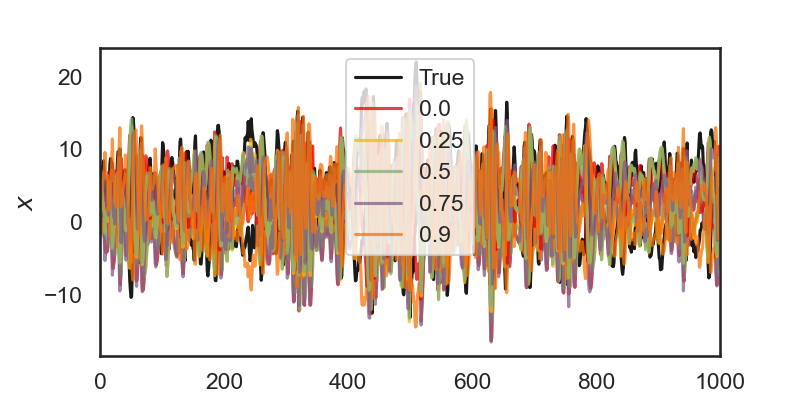

Variational Laplace EM for SLDS
Note
Click here to download the full example code
Variational Laplace EM for SLDS#
- 
Fitting SLDS with Laplace-EM, alpha = 0.0
0%| | 0/100 [00:00<?, ?it/s]
ELBO: -20719.9: 0%| | 0/100 [00:00<?, ?it/s]
ELBO: -9797.8: 0%| | 0/100 [00:00<?, ?it/s]
ELBO: -9797.8: 1%|1 | 1/100 [00:00<01:11, 1.39it/s]
ELBO: -9397.6: 1%|1 | 1/100 [00:01<01:11, 1.39it/s]
ELBO: -9397.6: 2%|2 | 2/100 [00:01<00:56, 1.72it/s]
ELBO: -9323.7: 2%|2 | 2/100 [00:01<00:56, 1.72it/s]
ELBO: -9323.7: 3%|3 | 3/100 [00:01<00:50, 1.94it/s]
ELBO: -9377.3: 3%|3 | 3/100 [00:02<00:50, 1.94it/s]
ELBO: -9377.3: 4%|4 | 4/100 [00:02<00:51, 1.86it/s]
ELBO: -9380.9: 4%|4 | 4/100 [00:02<00:51, 1.86it/s]
ELBO: -9380.9: 5%|5 | 5/100 [00:02<00:50, 1.90it/s]
ELBO: -9317.9: 5%|5 | 5/100 [00:02<00:50, 1.90it/s]
ELBO: -9317.9: 6%|6 | 6/100 [00:02<00:38, 2.44it/s]
ELBO: -9285.9: 6%|6 | 6/100 [00:03<00:38, 2.44it/s]
ELBO: -9285.9: 7%|7 | 7/100 [00:03<00:33, 2.78it/s]
ELBO: -9335.6: 7%|7 | 7/100 [00:03<00:33, 2.78it/s]
ELBO: -9335.6: 8%|8 | 8/100 [00:03<00:35, 2.60it/s]
ELBO: -9351.2: 8%|8 | 8/100 [00:03<00:35, 2.60it/s]
ELBO: -9351.2: 9%|9 | 9/100 [00:03<00:31, 2.87it/s]
ELBO: -9307.7: 9%|9 | 9/100 [00:04<00:31, 2.87it/s]
ELBO: -9307.7: 10%|# | 10/100 [00:04<00:27, 3.22it/s]
ELBO: -9270.3: 10%|# | 10/100 [00:04<00:27, 3.22it/s]
ELBO: -9270.3: 11%|#1 | 11/100 [00:04<00:23, 3.84it/s]
ELBO: -9310.8: 11%|#1 | 11/100 [00:04<00:23, 3.84it/s]
ELBO: -9310.8: 12%|#2 | 12/100 [00:04<00:30, 2.87it/s]
ELBO: -9317.8: 12%|#2 | 12/100 [00:04<00:30, 2.87it/s]
ELBO: -9317.8: 13%|#3 | 13/100 [00:04<00:25, 3.44it/s]
ELBO: -9282.0: 13%|#3 | 13/100 [00:05<00:25, 3.44it/s]
ELBO: -9282.0: 14%|#4 | 14/100 [00:05<00:25, 3.32it/s]
ELBO: -9296.8: 14%|#4 | 14/100 [00:05<00:25, 3.32it/s]
ELBO: -9304.6: 14%|#4 | 14/100 [00:05<00:25, 3.32it/s]
ELBO: -9304.6: 16%|#6 | 16/100 [00:05<00:19, 4.28it/s]
ELBO: -9257.6: 16%|#6 | 16/100 [00:06<00:19, 4.28it/s]
ELBO: -9257.6: 17%|#7 | 17/100 [00:06<00:23, 3.51it/s]
ELBO: -9238.2: 17%|#7 | 17/100 [00:06<00:23, 3.51it/s]
ELBO: -9238.2: 18%|#8 | 18/100 [00:06<00:20, 3.99it/s]
ELBO: -9273.0: 18%|#8 | 18/100 [00:06<00:20, 3.99it/s]
ELBO: -9273.0: 19%|#9 | 19/100 [00:06<00:19, 4.16it/s]
ELBO: -9251.4: 19%|#9 | 19/100 [00:06<00:19, 4.16it/s]
ELBO: -9251.4: 20%|## | 20/100 [00:06<00:25, 3.14it/s]
ELBO: -9292.9: 20%|## | 20/100 [00:07<00:25, 3.14it/s]
ELBO: -9292.9: 21%|##1 | 21/100 [00:07<00:23, 3.32it/s]
ELBO: -9211.2: 21%|##1 | 21/100 [00:07<00:23, 3.32it/s]
ELBO: -9211.2: 22%|##2 | 22/100 [00:07<00:27, 2.82it/s]
ELBO: -9312.2: 22%|##2 | 22/100 [00:07<00:27, 2.82it/s]
ELBO: -9312.2: 23%|##3 | 23/100 [00:07<00:24, 3.16it/s]
ELBO: -9262.5: 23%|##3 | 23/100 [00:08<00:24, 3.16it/s]
ELBO: -9262.5: 24%|##4 | 24/100 [00:08<00:26, 2.86it/s]
ELBO: -9249.2: 24%|##4 | 24/100 [00:08<00:26, 2.86it/s]
ELBO: -9249.2: 25%|##5 | 25/100 [00:08<00:33, 2.24it/s]
ELBO: -9341.5: 25%|##5 | 25/100 [00:09<00:33, 2.24it/s]
ELBO: -9341.5: 26%|##6 | 26/100 [00:09<00:29, 2.53it/s]
ELBO: -9273.0: 26%|##6 | 26/100 [00:09<00:29, 2.53it/s]
ELBO: -9273.0: 27%|##7 | 27/100 [00:09<00:29, 2.47it/s]
ELBO: -9264.0: 27%|##7 | 27/100 [00:10<00:29, 2.47it/s]
ELBO: -9264.0: 28%|##8 | 28/100 [00:10<00:32, 2.20it/s]
ELBO: -9245.8: 28%|##8 | 28/100 [00:10<00:32, 2.20it/s]
ELBO: -9245.8: 29%|##9 | 29/100 [00:10<00:27, 2.60it/s]
ELBO: -9278.2: 29%|##9 | 29/100 [00:11<00:27, 2.60it/s]
ELBO: -9278.2: 30%|### | 30/100 [00:11<00:32, 2.18it/s]
ELBO: -9310.5: 30%|### | 30/100 [00:11<00:32, 2.18it/s]
ELBO: -9310.5: 31%|###1 | 31/100 [00:11<00:24, 2.80it/s]
ELBO: -9247.7: 31%|###1 | 31/100 [00:11<00:24, 2.80it/s]
ELBO: -9247.7: 32%|###2 | 32/100 [00:11<00:29, 2.27it/s]
ELBO: -9299.3: 32%|###2 | 32/100 [00:12<00:29, 2.27it/s]
ELBO: -9299.3: 33%|###3 | 33/100 [00:12<00:27, 2.41it/s]
ELBO: -9282.5: 33%|###3 | 33/100 [00:12<00:27, 2.41it/s]
ELBO: -9282.5: 34%|###4 | 34/100 [00:12<00:27, 2.43it/s]
ELBO: -9273.2: 34%|###4 | 34/100 [00:13<00:27, 2.43it/s]
ELBO: -9273.2: 35%|###5 | 35/100 [00:13<00:27, 2.33it/s]
ELBO: -9267.0: 35%|###5 | 35/100 [00:13<00:27, 2.33it/s]
ELBO: -9267.0: 36%|###6 | 36/100 [00:13<00:22, 2.83it/s]
ELBO: -9257.4: 36%|###6 | 36/100 [00:13<00:22, 2.83it/s]
ELBO: -9257.4: 37%|###7 | 37/100 [00:13<00:26, 2.34it/s]
ELBO: -9279.6: 37%|###7 | 37/100 [00:13<00:26, 2.34it/s]
ELBO: -9279.6: 38%|###8 | 38/100 [00:13<00:20, 2.99it/s]
ELBO: -9266.3: 38%|###8 | 38/100 [00:14<00:20, 2.99it/s]
ELBO: -9266.3: 39%|###9 | 39/100 [00:14<00:26, 2.34it/s]
ELBO: -9222.5: 39%|###9 | 39/100 [00:14<00:26, 2.34it/s]
ELBO: -9222.5: 40%|#### | 40/100 [00:14<00:20, 2.96it/s]
ELBO: -9255.8: 40%|#### | 40/100 [00:14<00:20, 2.96it/s]
ELBO: -9255.8: 41%|####1 | 41/100 [00:14<00:17, 3.31it/s]
ELBO: -9290.3: 41%|####1 | 41/100 [00:15<00:17, 3.31it/s]
ELBO: -9290.3: 42%|####2 | 42/100 [00:15<00:16, 3.55it/s]
ELBO: -9273.6: 42%|####2 | 42/100 [00:15<00:16, 3.55it/s]
ELBO: -9273.6: 43%|####3 | 43/100 [00:15<00:19, 2.91it/s]
ELBO: -9235.3: 43%|####3 | 43/100 [00:16<00:19, 2.91it/s]
ELBO: -9235.3: 44%|####4 | 44/100 [00:16<00:19, 2.91it/s]
ELBO: -9297.5: 44%|####4 | 44/100 [00:16<00:19, 2.91it/s]
ELBO: -9297.5: 45%|####5 | 45/100 [00:16<00:19, 2.83it/s]
ELBO: -9295.5: 45%|####5 | 45/100 [00:16<00:19, 2.83it/s]
ELBO: -9295.5: 46%|####6 | 46/100 [00:16<00:16, 3.26it/s]
ELBO: -9253.0: 46%|####6 | 46/100 [00:17<00:16, 3.26it/s]
ELBO: -9253.0: 47%|####6 | 47/100 [00:17<00:18, 2.89it/s]
ELBO: -9284.9: 47%|####6 | 47/100 [00:17<00:18, 2.89it/s]
ELBO: -9284.9: 48%|####8 | 48/100 [00:17<00:19, 2.64it/s]
ELBO: -9244.3: 48%|####8 | 48/100 [00:17<00:19, 2.64it/s]
ELBO: -9244.3: 49%|####9 | 49/100 [00:17<00:18, 2.80it/s]
ELBO: -9255.4: 49%|####9 | 49/100 [00:18<00:18, 2.80it/s]
ELBO: -9255.4: 50%|##### | 50/100 [00:18<00:21, 2.35it/s]
ELBO: -9319.1: 50%|##### | 50/100 [00:18<00:21, 2.35it/s]
ELBO: -9319.1: 51%|#####1 | 51/100 [00:18<00:18, 2.62it/s]
ELBO: -9212.2: 51%|#####1 | 51/100 [00:19<00:18, 2.62it/s]
ELBO: -9212.2: 52%|#####2 | 52/100 [00:19<00:18, 2.58it/s]
ELBO: -9235.0: 52%|#####2 | 52/100 [00:19<00:18, 2.58it/s]
ELBO: -9235.0: 53%|#####3 | 53/100 [00:19<00:18, 2.50it/s]
ELBO: -9237.7: 53%|#####3 | 53/100 [00:19<00:18, 2.50it/s]
ELBO: -9237.7: 54%|#####4 | 54/100 [00:19<00:14, 3.09it/s]
ELBO: -9309.6: 54%|#####4 | 54/100 [00:20<00:14, 3.09it/s]
ELBO: -9309.6: 55%|#####5 | 55/100 [00:20<00:15, 2.99it/s]
ELBO: -9299.3: 55%|#####5 | 55/100 [00:20<00:15, 2.99it/s]
ELBO: -9299.3: 56%|#####6 | 56/100 [00:20<00:11, 3.71it/s]
ELBO: -9258.4: 56%|#####6 | 56/100 [00:20<00:11, 3.71it/s]
ELBO: -9258.4: 57%|#####6 | 57/100 [00:20<00:15, 2.70it/s]
ELBO: -9188.4: 57%|#####6 | 57/100 [00:20<00:15, 2.70it/s]
ELBO: -9188.4: 58%|#####8 | 58/100 [00:20<00:13, 3.09it/s]
ELBO: -9273.8: 58%|#####8 | 58/100 [00:21<00:13, 3.09it/s]
ELBO: -9273.8: 59%|#####8 | 59/100 [00:21<00:11, 3.64it/s]
ELBO: -9301.7: 59%|#####8 | 59/100 [00:21<00:11, 3.64it/s]
ELBO: -9301.7: 60%|###### | 60/100 [00:21<00:14, 2.80it/s]
ELBO: -9262.1: 60%|###### | 60/100 [00:21<00:14, 2.80it/s]
ELBO: -9262.1: 61%|######1 | 61/100 [00:21<00:11, 3.45it/s]
ELBO: -9265.1: 61%|######1 | 61/100 [00:22<00:11, 3.45it/s]
ELBO: -9265.1: 62%|######2 | 62/100 [00:22<00:13, 2.90it/s]
ELBO: -9229.2: 62%|######2 | 62/100 [00:22<00:13, 2.90it/s]
ELBO: -9229.2: 63%|######3 | 63/100 [00:22<00:10, 3.65it/s]
ELBO: -9274.6: 63%|######3 | 63/100 [00:22<00:10, 3.65it/s]
ELBO: -9274.6: 64%|######4 | 64/100 [00:22<00:12, 2.80it/s]
ELBO: -9302.8: 64%|######4 | 64/100 [00:23<00:12, 2.80it/s]
ELBO: -9302.8: 65%|######5 | 65/100 [00:23<00:10, 3.18it/s]
ELBO: -9296.8: 65%|######5 | 65/100 [00:23<00:10, 3.18it/s]
ELBO: -9296.8: 66%|######6 | 66/100 [00:23<00:08, 3.95it/s]
ELBO: -9290.5: 66%|######6 | 66/100 [00:23<00:08, 3.95it/s]
ELBO: -9290.5: 67%|######7 | 67/100 [00:23<00:06, 4.73it/s]
ELBO: -9264.8: 67%|######7 | 67/100 [00:23<00:06, 4.73it/s]
ELBO: -9264.8: 68%|######8 | 68/100 [00:23<00:09, 3.48it/s]
ELBO: -9314.4: 68%|######8 | 68/100 [00:24<00:09, 3.48it/s]
ELBO: -9314.4: 69%|######9 | 69/100 [00:24<00:08, 3.56it/s]
ELBO: -9271.6: 69%|######9 | 69/100 [00:24<00:08, 3.56it/s]
ELBO: -9271.6: 70%|####### | 70/100 [00:24<00:06, 4.32it/s]
ELBO: -9245.7: 70%|####### | 70/100 [00:24<00:06, 4.32it/s]
ELBO: -9245.7: 71%|#######1 | 71/100 [00:24<00:09, 2.93it/s]
ELBO: -9304.7: 71%|#######1 | 71/100 [00:25<00:09, 2.93it/s]
ELBO: -9304.7: 72%|#######2 | 72/100 [00:25<00:08, 3.36it/s]
ELBO: -9285.4: 72%|#######2 | 72/100 [00:25<00:08, 3.36it/s]
ELBO: -9285.4: 73%|#######3 | 73/100 [00:25<00:10, 2.48it/s]
ELBO: -9263.3: 73%|#######3 | 73/100 [00:25<00:10, 2.48it/s]
ELBO: -9263.3: 74%|#######4 | 74/100 [00:25<00:08, 3.05it/s]
ELBO: -9269.0: 74%|#######4 | 74/100 [00:26<00:08, 3.05it/s]
ELBO: -9269.0: 75%|#######5 | 75/100 [00:26<00:09, 2.60it/s]
ELBO: -9252.0: 75%|#######5 | 75/100 [00:26<00:09, 2.60it/s]
ELBO: -9252.0: 76%|#######6 | 76/100 [00:26<00:10, 2.27it/s]
ELBO: -9286.7: 76%|#######6 | 76/100 [00:27<00:10, 2.27it/s]
ELBO: -9286.7: 77%|#######7 | 77/100 [00:27<00:08, 2.71it/s]
ELBO: -9246.3: 77%|#######7 | 77/100 [00:27<00:08, 2.71it/s]
ELBO: -9246.3: 78%|#######8 | 78/100 [00:27<00:07, 2.76it/s]
ELBO: -9267.5: 78%|#######8 | 78/100 [00:28<00:07, 2.76it/s]
ELBO: -9267.5: 79%|#######9 | 79/100 [00:28<00:08, 2.34it/s]
ELBO: -9278.2: 79%|#######9 | 79/100 [00:28<00:08, 2.34it/s]
ELBO: -9278.2: 80%|######## | 80/100 [00:28<00:06, 2.92it/s]
ELBO: -9212.6: 80%|######## | 80/100 [00:28<00:06, 2.92it/s]
ELBO: -9212.6: 81%|########1 | 81/100 [00:28<00:08, 2.36it/s]
ELBO: -9305.5: 81%|########1 | 81/100 [00:28<00:08, 2.36it/s]
ELBO: -9305.5: 82%|########2 | 82/100 [00:28<00:06, 2.94it/s]
ELBO: -9255.1: 82%|########2 | 82/100 [00:29<00:06, 2.94it/s]
ELBO: -9255.1: 83%|########2 | 83/100 [00:29<00:07, 2.37it/s]
ELBO: -9252.5: 83%|########2 | 83/100 [00:29<00:07, 2.37it/s]
ELBO: -9252.5: 84%|########4 | 84/100 [00:29<00:05, 2.95it/s]
ELBO: -9289.1: 84%|########4 | 84/100 [00:30<00:05, 2.95it/s]
ELBO: -9289.1: 85%|########5 | 85/100 [00:30<00:05, 2.67it/s]
ELBO: -9281.2: 85%|########5 | 85/100 [00:30<00:05, 2.67it/s]
ELBO: -9281.2: 86%|########6 | 86/100 [00:30<00:04, 3.36it/s]
ELBO: -9251.2: 86%|########6 | 86/100 [00:30<00:04, 3.36it/s]
ELBO: -9251.2: 87%|########7 | 87/100 [00:30<00:04, 2.85it/s]
ELBO: -9258.0: 87%|########7 | 87/100 [00:30<00:04, 2.85it/s]
ELBO: -9258.0: 88%|########8 | 88/100 [00:30<00:03, 3.15it/s]
ELBO: -9318.9: 88%|########8 | 88/100 [00:31<00:03, 3.15it/s]
ELBO: -9318.9: 89%|########9 | 89/100 [00:31<00:04, 2.47it/s]
ELBO: -9280.5: 89%|########9 | 89/100 [00:31<00:04, 2.47it/s]
ELBO: -9280.5: 90%|######### | 90/100 [00:31<00:03, 2.59it/s]
ELBO: -9325.3: 90%|######### | 90/100 [00:32<00:03, 2.59it/s]
ELBO: -9325.3: 91%|#########1| 91/100 [00:32<00:03, 2.78it/s]
ELBO: -9289.7: 91%|#########1| 91/100 [00:32<00:03, 2.78it/s]
ELBO: -9289.7: 92%|#########2| 92/100 [00:32<00:03, 2.41it/s]
ELBO: -9288.5: 92%|#########2| 92/100 [00:33<00:03, 2.41it/s]
ELBO: -9288.5: 93%|#########3| 93/100 [00:33<00:02, 2.73it/s]
ELBO: -9272.6: 93%|#########3| 93/100 [00:33<00:02, 2.73it/s]
ELBO: -9272.6: 94%|#########3| 94/100 [00:33<00:02, 2.55it/s]
ELBO: -9255.5: 94%|#########3| 94/100 [00:34<00:02, 2.55it/s]
ELBO: -9255.5: 95%|#########5| 95/100 [00:34<00:02, 2.23it/s]
ELBO: -9224.0: 95%|#########5| 95/100 [00:34<00:02, 2.23it/s]
ELBO: -9224.0: 96%|#########6| 96/100 [00:34<00:01, 2.82it/s]
ELBO: -9248.2: 96%|#########6| 96/100 [00:34<00:01, 2.82it/s]
ELBO: -9248.2: 97%|#########7| 97/100 [00:34<00:01, 2.30it/s]
ELBO: -9230.3: 97%|#########7| 97/100 [00:35<00:01, 2.30it/s]
ELBO: -9230.3: 98%|#########8| 98/100 [00:35<00:00, 2.70it/s]
ELBO: -9269.9: 98%|#########8| 98/100 [00:35<00:00, 2.70it/s]
ELBO: -9269.9: 99%|#########9| 99/100 [00:35<00:00, 2.54it/s]
ELBO: -9330.5: 99%|#########9| 99/100 [00:35<00:00, 2.54it/s]
ELBO: -9330.5: 100%|##########| 100/100 [00:35<00:00, 2.55it/s]
ELBO: -9330.5: 100%|##########| 100/100 [00:35<00:00, 2.79it/s]
Fitting SLDS with Laplace-EM, alpha = 0.25
0%| | 0/100 [00:00<?, ?it/s]
ELBO: -20525.9: 0%| | 0/100 [00:00<?, ?it/s]
ELBO: -9730.8: 0%| | 0/100 [00:00<?, ?it/s]
ELBO: -9730.8: 1%|1 | 1/100 [00:00<00:28, 3.49it/s]
ELBO: -9459.0: 1%|1 | 1/100 [00:00<00:28, 3.49it/s]
ELBO: -9459.0: 2%|2 | 2/100 [00:00<00:28, 3.48it/s]
ELBO: -9467.0: 2%|2 | 2/100 [00:01<00:28, 3.48it/s]
ELBO: -9467.0: 3%|3 | 3/100 [00:01<00:38, 2.51it/s]
ELBO: -9418.5: 3%|3 | 3/100 [00:01<00:38, 2.51it/s]
ELBO: -9418.5: 4%|4 | 4/100 [00:01<00:31, 3.06it/s]
ELBO: -9464.4: 4%|4 | 4/100 [00:01<00:31, 3.06it/s]
ELBO: -9464.4: 5%|5 | 5/100 [00:01<00:31, 2.97it/s]
ELBO: -9327.2: 5%|5 | 5/100 [00:02<00:31, 2.97it/s]
ELBO: -9327.2: 6%|6 | 6/100 [00:02<00:35, 2.67it/s]
ELBO: -9359.9: 6%|6 | 6/100 [00:02<00:35, 2.67it/s]
ELBO: -9359.9: 7%|7 | 7/100 [00:02<00:27, 3.34it/s]
ELBO: -9315.1: 7%|7 | 7/100 [00:02<00:27, 3.34it/s]
ELBO: -9315.1: 8%|8 | 8/100 [00:02<00:30, 3.02it/s]
ELBO: -9338.5: 8%|8 | 8/100 [00:03<00:30, 3.02it/s]
ELBO: -9338.5: 9%|9 | 9/100 [00:03<00:37, 2.43it/s]
ELBO: -9342.1: 9%|9 | 9/100 [00:03<00:37, 2.43it/s]
ELBO: -9342.1: 10%|# | 10/100 [00:03<00:31, 2.90it/s]
ELBO: -9320.1: 10%|# | 10/100 [00:03<00:31, 2.90it/s]
ELBO: -9320.1: 11%|#1 | 11/100 [00:03<00:33, 2.67it/s]
ELBO: -9286.4: 11%|#1 | 11/100 [00:04<00:33, 2.67it/s]
ELBO: -9286.4: 12%|#2 | 12/100 [00:04<00:27, 3.25it/s]
ELBO: -9302.7: 12%|#2 | 12/100 [00:04<00:27, 3.25it/s]
ELBO: -9302.7: 13%|#3 | 13/100 [00:04<00:33, 2.59it/s]
ELBO: -9257.7: 13%|#3 | 13/100 [00:04<00:33, 2.59it/s]
ELBO: -9257.7: 14%|#4 | 14/100 [00:04<00:26, 3.30it/s]
ELBO: -9293.8: 14%|#4 | 14/100 [00:05<00:26, 3.30it/s]
ELBO: -9293.8: 15%|#5 | 15/100 [00:05<00:32, 2.65it/s]
ELBO: -9226.1: 15%|#5 | 15/100 [00:05<00:32, 2.65it/s]
ELBO: -9226.1: 16%|#6 | 16/100 [00:05<00:26, 3.17it/s]
ELBO: -9255.8: 16%|#6 | 16/100 [00:06<00:26, 3.17it/s]
ELBO: -9255.8: 17%|#7 | 17/100 [00:06<00:34, 2.42it/s]
ELBO: -9212.9: 17%|#7 | 17/100 [00:06<00:34, 2.42it/s]
ELBO: -9212.9: 18%|#8 | 18/100 [00:06<00:27, 3.03it/s]
ELBO: -9331.4: 18%|#8 | 18/100 [00:06<00:27, 3.03it/s]
ELBO: -9331.4: 19%|#9 | 19/100 [00:06<00:29, 2.74it/s]
ELBO: -9298.6: 19%|#9 | 19/100 [00:07<00:29, 2.74it/s]
ELBO: -9298.6: 20%|## | 20/100 [00:07<00:29, 2.67it/s]
ELBO: -9326.5: 20%|## | 20/100 [00:07<00:29, 2.67it/s]
ELBO: -9326.5: 21%|##1 | 21/100 [00:07<00:33, 2.33it/s]
ELBO: -9326.7: 21%|##1 | 21/100 [00:07<00:33, 2.33it/s]
ELBO: -9326.7: 22%|##2 | 22/100 [00:07<00:26, 2.91it/s]
ELBO: -9243.2: 22%|##2 | 22/100 [00:08<00:26, 2.91it/s]
ELBO: -9243.2: 23%|##3 | 23/100 [00:08<00:33, 2.33it/s]
ELBO: -9318.2: 23%|##3 | 23/100 [00:08<00:33, 2.33it/s]
ELBO: -9318.2: 24%|##4 | 24/100 [00:08<00:29, 2.62it/s]
ELBO: -9279.4: 24%|##4 | 24/100 [00:08<00:29, 2.62it/s]
ELBO: -9279.4: 25%|##5 | 25/100 [00:08<00:26, 2.82it/s]
ELBO: -9310.4: 25%|##5 | 25/100 [00:09<00:26, 2.82it/s]
ELBO: -9310.4: 26%|##6 | 26/100 [00:09<00:30, 2.42it/s]
ELBO: -9302.6: 26%|##6 | 26/100 [00:09<00:30, 2.42it/s]
ELBO: -9302.6: 27%|##7 | 27/100 [00:09<00:27, 2.66it/s]
ELBO: -9297.2: 27%|##7 | 27/100 [00:10<00:27, 2.66it/s]
ELBO: -9297.2: 28%|##8 | 28/100 [00:10<00:27, 2.58it/s]
ELBO: -9269.4: 28%|##8 | 28/100 [00:10<00:27, 2.58it/s]
ELBO: -9269.4: 29%|##9 | 29/100 [00:10<00:30, 2.29it/s]
ELBO: -9244.2: 29%|##9 | 29/100 [00:10<00:30, 2.29it/s]
ELBO: -9244.2: 30%|### | 30/100 [00:10<00:23, 2.94it/s]
ELBO: -9315.3: 30%|### | 30/100 [00:11<00:23, 2.94it/s]
ELBO: -9315.3: 31%|###1 | 31/100 [00:11<00:28, 2.46it/s]
ELBO: -9272.7: 31%|###1 | 31/100 [00:12<00:28, 2.46it/s]
ELBO: -9272.7: 32%|###2 | 32/100 [00:12<00:31, 2.18it/s]
ELBO: -9304.7: 32%|###2 | 32/100 [00:12<00:31, 2.18it/s]
ELBO: -9304.7: 33%|###3 | 33/100 [00:12<00:23, 2.80it/s]
ELBO: -9296.8: 33%|###3 | 33/100 [00:12<00:23, 2.80it/s]
ELBO: -9296.8: 34%|###4 | 34/100 [00:12<00:27, 2.39it/s]
ELBO: -9281.1: 34%|###4 | 34/100 [00:13<00:27, 2.39it/s]
ELBO: -9281.1: 35%|###5 | 35/100 [00:13<00:30, 2.13it/s]
ELBO: -9306.7: 35%|###5 | 35/100 [00:13<00:30, 2.13it/s]
ELBO: -9306.7: 36%|###6 | 36/100 [00:13<00:23, 2.75it/s]
ELBO: -9259.4: 36%|###6 | 36/100 [00:13<00:23, 2.75it/s]
ELBO: -9259.4: 37%|###7 | 37/100 [00:13<00:17, 3.50it/s]
ELBO: -9270.1: 37%|###7 | 37/100 [00:13<00:17, 3.50it/s]
ELBO: -9270.1: 38%|###8 | 38/100 [00:13<00:18, 3.36it/s]
ELBO: -9189.8: 38%|###8 | 38/100 [00:14<00:18, 3.36it/s]
ELBO: -9189.8: 39%|###9 | 39/100 [00:14<00:16, 3.80it/s]
ELBO: -9305.6: 39%|###9 | 39/100 [00:14<00:16, 3.80it/s]
ELBO: -9305.6: 40%|#### | 40/100 [00:14<00:19, 3.14it/s]
ELBO: -9315.3: 40%|#### | 40/100 [00:14<00:19, 3.14it/s]
ELBO: -9315.3: 41%|####1 | 41/100 [00:14<00:19, 3.01it/s]
ELBO: -9300.6: 41%|####1 | 41/100 [00:15<00:19, 3.01it/s]
ELBO: -9300.6: 42%|####2 | 42/100 [00:15<00:18, 3.20it/s]
ELBO: -9281.6: 42%|####2 | 42/100 [00:15<00:18, 3.20it/s]
ELBO: -9281.6: 43%|####3 | 43/100 [00:15<00:22, 2.57it/s]
ELBO: -9271.9: 43%|####3 | 43/100 [00:15<00:22, 2.57it/s]
ELBO: -9271.9: 44%|####4 | 44/100 [00:15<00:17, 3.12it/s]
ELBO: -9288.9: 44%|####4 | 44/100 [00:16<00:17, 3.12it/s]
ELBO: -9288.9: 45%|####5 | 45/100 [00:16<00:18, 2.95it/s]
ELBO: -9245.1: 45%|####5 | 45/100 [00:16<00:18, 2.95it/s]
ELBO: -9245.1: 46%|####6 | 46/100 [00:16<00:22, 2.41it/s]
ELBO: -9315.0: 46%|####6 | 46/100 [00:17<00:22, 2.41it/s]
ELBO: -9315.0: 47%|####6 | 47/100 [00:17<00:19, 2.67it/s]
ELBO: -9313.0: 47%|####6 | 47/100 [00:17<00:19, 2.67it/s]
ELBO: -9313.0: 48%|####8 | 48/100 [00:17<00:18, 2.82it/s]
ELBO: -9273.9: 48%|####8 | 48/100 [00:18<00:18, 2.82it/s]
ELBO: -9273.9: 49%|####9 | 49/100 [00:18<00:23, 2.20it/s]
ELBO: -9293.3: 49%|####9 | 49/100 [00:18<00:23, 2.20it/s]
ELBO: -9293.3: 50%|##### | 50/100 [00:18<00:18, 2.70it/s]
ELBO: -9257.2: 50%|##### | 50/100 [00:18<00:18, 2.70it/s]
ELBO: -9257.2: 51%|#####1 | 51/100 [00:18<00:17, 2.74it/s]
ELBO: -9286.9: 51%|#####1 | 51/100 [00:19<00:17, 2.74it/s]
ELBO: -9286.9: 52%|#####2 | 52/100 [00:19<00:20, 2.33it/s]
ELBO: -9206.9: 52%|#####2 | 52/100 [00:19<00:20, 2.33it/s]
ELBO: -9206.9: 53%|#####3 | 53/100 [00:19<00:16, 2.91it/s]
ELBO: -9305.9: 53%|#####3 | 53/100 [00:19<00:16, 2.91it/s]
ELBO: -9305.9: 54%|#####4 | 54/100 [00:19<00:16, 2.74it/s]
ELBO: -9252.3: 54%|#####4 | 54/100 [00:19<00:16, 2.74it/s]
ELBO: -9252.3: 55%|#####5 | 55/100 [00:19<00:13, 3.42it/s]
ELBO: -9282.8: 55%|#####5 | 55/100 [00:20<00:13, 3.42it/s]
ELBO: -9282.8: 56%|#####6 | 56/100 [00:20<00:15, 2.93it/s]
ELBO: -9245.2: 56%|#####6 | 56/100 [00:20<00:15, 2.93it/s]
ELBO: -9245.2: 57%|#####6 | 57/100 [00:20<00:12, 3.42it/s]
ELBO: -9276.0: 57%|#####6 | 57/100 [00:20<00:12, 3.42it/s]
ELBO: -9276.0: 58%|#####8 | 58/100 [00:20<00:14, 2.83it/s]
ELBO: -9321.5: 58%|#####8 | 58/100 [00:21<00:14, 2.83it/s]
ELBO: -9321.5: 59%|#####8 | 59/100 [00:21<00:17, 2.38it/s]
ELBO: -9306.4: 59%|#####8 | 59/100 [00:21<00:17, 2.38it/s]
ELBO: -9306.4: 60%|###### | 60/100 [00:21<00:13, 3.07it/s]
ELBO: -9313.8: 60%|###### | 60/100 [00:22<00:13, 3.07it/s]
ELBO: -9313.8: 61%|######1 | 61/100 [00:22<00:15, 2.48it/s]
ELBO: -9271.9: 61%|######1 | 61/100 [00:22<00:15, 2.48it/s]
ELBO: -9271.9: 62%|######2 | 62/100 [00:22<00:17, 2.22it/s]
ELBO: -9325.5: 62%|######2 | 62/100 [00:22<00:17, 2.22it/s]
ELBO: -9325.5: 63%|######3 | 63/100 [00:22<00:12, 2.87it/s]
ELBO: -9352.3: 63%|######3 | 63/100 [00:23<00:12, 2.87it/s]
ELBO: -9352.3: 64%|######4 | 64/100 [00:23<00:15, 2.35it/s]
ELBO: -9229.2: 64%|######4 | 64/100 [00:23<00:15, 2.35it/s]
ELBO: -9229.2: 65%|######5 | 65/100 [00:23<00:13, 2.64it/s]
ELBO: -9329.8: 65%|######5 | 65/100 [00:24<00:13, 2.64it/s]
ELBO: -9329.8: 66%|######6 | 66/100 [00:24<00:11, 3.08it/s]
ELBO: -9301.4: 66%|######6 | 66/100 [00:24<00:11, 3.08it/s]
ELBO: -9301.4: 67%|######7 | 67/100 [00:24<00:10, 3.23it/s]
ELBO: -9240.6: 67%|######7 | 67/100 [00:24<00:10, 3.23it/s]
ELBO: -9240.6: 68%|######8 | 68/100 [00:24<00:12, 2.59it/s]
ELBO: -9313.3: 68%|######8 | 68/100 [00:25<00:12, 2.59it/s]
ELBO: -9313.3: 69%|######9 | 69/100 [00:25<00:09, 3.13it/s]
ELBO: -9315.7: 69%|######9 | 69/100 [00:25<00:09, 3.13it/s]
ELBO: -9315.7: 70%|####### | 70/100 [00:25<00:10, 2.97it/s]
ELBO: -9314.9: 70%|####### | 70/100 [00:25<00:10, 2.97it/s]
ELBO: -9314.9: 71%|#######1 | 71/100 [00:25<00:11, 2.45it/s]
ELBO: -9317.4: 71%|#######1 | 71/100 [00:26<00:11, 2.45it/s]
ELBO: -9317.4: 72%|#######2 | 72/100 [00:26<00:08, 3.16it/s]
ELBO: -9276.6: 72%|#######2 | 72/100 [00:26<00:08, 3.16it/s]
ELBO: -9276.6: 73%|#######3 | 73/100 [00:26<00:06, 3.86it/s]
ELBO: -9300.9: 73%|#######3 | 73/100 [00:26<00:06, 3.86it/s]
ELBO: -9300.9: 74%|#######4 | 74/100 [00:26<00:08, 2.92it/s]
ELBO: -9301.0: 74%|#######4 | 74/100 [00:26<00:08, 2.92it/s]
ELBO: -9286.7: 74%|#######4 | 74/100 [00:27<00:08, 2.92it/s]
ELBO: -9286.7: 76%|#######6 | 76/100 [00:27<00:07, 3.24it/s]
ELBO: -9288.2: 76%|#######6 | 76/100 [00:27<00:07, 3.24it/s]
ELBO: -9288.2: 77%|#######7 | 77/100 [00:27<00:08, 2.67it/s]
ELBO: -9298.2: 77%|#######7 | 77/100 [00:27<00:08, 2.67it/s]
ELBO: -9281.7: 77%|#######7 | 77/100 [00:28<00:08, 2.67it/s]
ELBO: -9281.7: 79%|#######9 | 79/100 [00:28<00:07, 2.84it/s]
ELBO: -9320.1: 79%|#######9 | 79/100 [00:28<00:07, 2.84it/s]
ELBO: -9320.1: 80%|######## | 80/100 [00:28<00:06, 3.24it/s]
ELBO: -9251.6: 80%|######## | 80/100 [00:29<00:06, 3.24it/s]
ELBO: -9251.6: 81%|########1 | 81/100 [00:29<00:06, 3.07it/s]
ELBO: -9331.4: 81%|########1 | 81/100 [00:29<00:06, 3.07it/s]
ELBO: -9331.4: 82%|########2 | 82/100 [00:29<00:07, 2.54it/s]
ELBO: -9337.5: 82%|########2 | 82/100 [00:29<00:07, 2.54it/s]
ELBO: -9337.5: 83%|########2 | 83/100 [00:29<00:05, 3.17it/s]
ELBO: -9321.6: 83%|########2 | 83/100 [00:30<00:05, 3.17it/s]
ELBO: -9321.6: 84%|########4 | 84/100 [00:30<00:06, 2.49it/s]
ELBO: -9304.5: 84%|########4 | 84/100 [00:30<00:06, 2.49it/s]
ELBO: -9304.5: 85%|########5 | 85/100 [00:30<00:06, 2.27it/s]
ELBO: -9284.6: 85%|########5 | 85/100 [00:31<00:06, 2.27it/s]
ELBO: -9284.6: 86%|########6 | 86/100 [00:31<00:05, 2.80it/s]
ELBO: -9277.9: 86%|########6 | 86/100 [00:31<00:05, 2.80it/s]
ELBO: -9277.9: 87%|########7 | 87/100 [00:31<00:04, 2.75it/s]
ELBO: -9260.7: 87%|########7 | 87/100 [00:31<00:04, 2.75it/s]
ELBO: -9260.7: 88%|########8 | 88/100 [00:31<00:04, 2.74it/s]
ELBO: -9308.0: 88%|########8 | 88/100 [00:31<00:04, 2.74it/s]
ELBO: -9308.0: 89%|########9 | 89/100 [00:31<00:03, 3.47it/s]
ELBO: -9310.3: 89%|########9 | 89/100 [00:31<00:03, 3.47it/s]
ELBO: -9286.8: 89%|########9 | 89/100 [00:32<00:03, 3.47it/s]
ELBO: -9286.8: 91%|#########1| 91/100 [00:32<00:01, 4.69it/s]
ELBO: -9360.7: 91%|#########1| 91/100 [00:32<00:01, 4.69it/s]
ELBO: -9360.7: 92%|#########2| 92/100 [00:32<00:02, 3.84it/s]
ELBO: -9298.6: 92%|#########2| 92/100 [00:32<00:02, 3.84it/s]
ELBO: -9298.6: 93%|#########3| 93/100 [00:32<00:01, 3.54it/s]
ELBO: -9258.1: 93%|#########3| 93/100 [00:33<00:01, 3.54it/s]
ELBO: -9258.1: 94%|#########3| 94/100 [00:33<00:01, 3.62it/s]
ELBO: -9248.6: 94%|#########3| 94/100 [00:33<00:01, 3.62it/s]
ELBO: -9248.6: 95%|#########5| 95/100 [00:33<00:01, 4.17it/s]
ELBO: -9317.9: 95%|#########5| 95/100 [00:33<00:01, 4.17it/s]
ELBO: -9317.9: 96%|#########6| 96/100 [00:33<00:01, 3.57it/s]
ELBO: -9272.5: 96%|#########6| 96/100 [00:34<00:01, 3.57it/s]
ELBO: -9272.5: 97%|#########7| 97/100 [00:34<00:00, 3.35it/s]
ELBO: -9345.4: 97%|#########7| 97/100 [00:34<00:00, 3.35it/s]
ELBO: -9345.4: 98%|#########8| 98/100 [00:34<00:00, 4.06it/s]
ELBO: -9327.8: 98%|#########8| 98/100 [00:34<00:00, 4.06it/s]
ELBO: -9327.8: 99%|#########9| 99/100 [00:34<00:00, 4.41it/s]
ELBO: -9316.1: 99%|#########9| 99/100 [00:34<00:00, 4.41it/s]
ELBO: -9316.1: 100%|##########| 100/100 [00:34<00:00, 3.07it/s]
ELBO: -9316.1: 100%|##########| 100/100 [00:34<00:00, 2.87it/s]
Fitting SLDS with Laplace-EM, alpha = 0.5
0%| | 0/100 [00:00<?, ?it/s]
ELBO: -20229.3: 0%| | 0/100 [00:00<?, ?it/s]
ELBO: -10059.0: 0%| | 0/100 [00:00<?, ?it/s]
ELBO: -10059.0: 1%|1 | 1/100 [00:00<00:54, 1.80it/s]
ELBO: -9641.6: 1%|1 | 1/100 [00:01<00:54, 1.80it/s]
ELBO: -9641.6: 2%|2 | 2/100 [00:01<00:54, 1.79it/s]
ELBO: -9485.2: 2%|2 | 2/100 [00:01<00:54, 1.79it/s]
ELBO: -9485.2: 3%|3 | 3/100 [00:01<00:42, 2.30it/s]
ELBO: -9459.5: 3%|3 | 3/100 [00:02<00:42, 2.30it/s]
ELBO: -9459.5: 4%|4 | 4/100 [00:02<00:48, 1.99it/s]
ELBO: -9361.6: 4%|4 | 4/100 [00:02<00:48, 1.99it/s]
ELBO: -9361.6: 5%|5 | 5/100 [00:02<00:36, 2.63it/s]
ELBO: -9368.2: 5%|5 | 5/100 [00:02<00:36, 2.63it/s]
ELBO: -9368.2: 6%|6 | 6/100 [00:02<00:38, 2.47it/s]
ELBO: -9359.9: 6%|6 | 6/100 [00:03<00:38, 2.47it/s]
ELBO: -9359.9: 7%|7 | 7/100 [00:03<00:42, 2.18it/s]
ELBO: -9350.5: 7%|7 | 7/100 [00:03<00:42, 2.18it/s]
ELBO: -9350.5: 8%|8 | 8/100 [00:03<00:34, 2.70it/s]
ELBO: -9347.4: 8%|8 | 8/100 [00:03<00:34, 2.70it/s]
ELBO: -9347.4: 9%|9 | 9/100 [00:03<00:27, 3.29it/s]
ELBO: -9356.5: 9%|9 | 9/100 [00:03<00:27, 3.29it/s]
ELBO: -9356.5: 10%|# | 10/100 [00:03<00:24, 3.61it/s]
ELBO: -9341.0: 10%|# | 10/100 [00:04<00:24, 3.61it/s]
ELBO: -9341.0: 11%|#1 | 11/100 [00:04<00:28, 3.16it/s]
ELBO: -9344.6: 11%|#1 | 11/100 [00:04<00:28, 3.16it/s]
ELBO: -9344.6: 12%|#2 | 12/100 [00:04<00:22, 3.83it/s]
ELBO: -9395.1: 12%|#2 | 12/100 [00:04<00:22, 3.83it/s]
ELBO: -9395.1: 13%|#3 | 13/100 [00:04<00:28, 3.01it/s]
ELBO: -9336.8: 13%|#3 | 13/100 [00:04<00:28, 3.01it/s]
ELBO: -9336.8: 14%|#4 | 14/100 [00:04<00:23, 3.59it/s]
ELBO: -9289.4: 14%|#4 | 14/100 [00:05<00:23, 3.59it/s]
ELBO: -9289.4: 15%|#5 | 15/100 [00:05<00:29, 2.93it/s]
ELBO: -9302.4: 15%|#5 | 15/100 [00:05<00:29, 2.93it/s]
ELBO: -9302.4: 16%|#6 | 16/100 [00:05<00:32, 2.62it/s]
ELBO: -9301.9: 16%|#6 | 16/100 [00:06<00:32, 2.62it/s]
ELBO: -9301.9: 17%|#7 | 17/100 [00:06<00:29, 2.77it/s]
ELBO: -9329.7: 17%|#7 | 17/100 [00:06<00:29, 2.77it/s]
ELBO: -9329.7: 18%|#8 | 18/100 [00:06<00:27, 3.03it/s]
ELBO: -9317.5: 18%|#8 | 18/100 [00:06<00:27, 3.03it/s]
ELBO: -9317.5: 19%|#9 | 19/100 [00:06<00:29, 2.73it/s]
ELBO: -9310.7: 19%|#9 | 19/100 [00:07<00:29, 2.73it/s]
ELBO: -9310.7: 20%|## | 20/100 [00:07<00:33, 2.37it/s]
ELBO: -9288.4: 20%|## | 20/100 [00:07<00:33, 2.37it/s]
ELBO: -9288.4: 21%|##1 | 21/100 [00:07<00:27, 2.86it/s]
ELBO: -9316.8: 21%|##1 | 21/100 [00:08<00:27, 2.86it/s]
ELBO: -9316.8: 22%|##2 | 22/100 [00:08<00:27, 2.82it/s]
ELBO: -9279.1: 22%|##2 | 22/100 [00:08<00:27, 2.82it/s]
ELBO: -9279.1: 23%|##3 | 23/100 [00:08<00:32, 2.35it/s]
ELBO: -9302.6: 23%|##3 | 23/100 [00:08<00:32, 2.35it/s]
ELBO: -9302.6: 24%|##4 | 24/100 [00:08<00:24, 3.05it/s]
ELBO: -9290.1: 24%|##4 | 24/100 [00:09<00:24, 3.05it/s]
ELBO: -9290.1: 25%|##5 | 25/100 [00:09<00:27, 2.73it/s]
ELBO: -9279.4: 25%|##5 | 25/100 [00:09<00:27, 2.73it/s]
ELBO: -9279.4: 26%|##6 | 26/100 [00:09<00:31, 2.33it/s]
ELBO: -9312.6: 26%|##6 | 26/100 [00:10<00:31, 2.33it/s]
ELBO: -9312.6: 27%|##7 | 27/100 [00:10<00:28, 2.59it/s]
ELBO: -9271.7: 27%|##7 | 27/100 [00:10<00:28, 2.59it/s]
ELBO: -9271.7: 28%|##8 | 28/100 [00:10<00:28, 2.57it/s]
ELBO: -9305.0: 28%|##8 | 28/100 [00:11<00:28, 2.57it/s]
ELBO: -9305.0: 29%|##9 | 29/100 [00:11<00:33, 2.11it/s]
ELBO: -9311.4: 29%|##9 | 29/100 [00:11<00:33, 2.11it/s]
ELBO: -9311.4: 30%|### | 30/100 [00:11<00:25, 2.70it/s]
ELBO: -9274.6: 30%|### | 30/100 [00:11<00:25, 2.70it/s]
ELBO: -9274.6: 31%|###1 | 31/100 [00:11<00:29, 2.30it/s]
ELBO: -9313.9: 31%|###1 | 31/100 [00:11<00:29, 2.30it/s]
ELBO: -9313.9: 32%|###2 | 32/100 [00:11<00:23, 2.88it/s]
ELBO: -9284.2: 32%|###2 | 32/100 [00:12<00:23, 2.88it/s]
ELBO: -9284.2: 33%|###3 | 33/100 [00:12<00:27, 2.47it/s]
ELBO: -9289.7: 33%|###3 | 33/100 [00:12<00:27, 2.47it/s]
ELBO: -9289.7: 34%|###4 | 34/100 [00:12<00:24, 2.69it/s]
ELBO: -9275.2: 34%|###4 | 34/100 [00:13<00:24, 2.69it/s]
ELBO: -9275.2: 35%|###5 | 35/100 [00:13<00:26, 2.49it/s]
ELBO: -9205.7: 35%|###5 | 35/100 [00:13<00:26, 2.49it/s]
ELBO: -9205.7: 36%|###6 | 36/100 [00:13<00:23, 2.72it/s]
ELBO: -9275.3: 36%|###6 | 36/100 [00:14<00:23, 2.72it/s]
ELBO: -9275.3: 37%|###7 | 37/100 [00:14<00:26, 2.35it/s]
ELBO: -9322.0: 37%|###7 | 37/100 [00:14<00:26, 2.35it/s]
ELBO: -9322.0: 38%|###8 | 38/100 [00:14<00:20, 3.04it/s]
ELBO: -9317.7: 38%|###8 | 38/100 [00:14<00:20, 3.04it/s]
ELBO: -9317.7: 39%|###9 | 39/100 [00:14<00:22, 2.77it/s]
ELBO: -9313.1: 39%|###9 | 39/100 [00:15<00:22, 2.77it/s]
ELBO: -9313.1: 40%|#### | 40/100 [00:15<00:25, 2.37it/s]
ELBO: -9243.0: 40%|#### | 40/100 [00:15<00:25, 2.37it/s]
ELBO: -9243.0: 41%|####1 | 41/100 [00:15<00:20, 2.92it/s]
ELBO: -9319.4: 41%|####1 | 41/100 [00:15<00:20, 2.92it/s]
ELBO: -9319.4: 42%|####2 | 42/100 [00:15<00:21, 2.75it/s]
ELBO: -9329.2: 42%|####2 | 42/100 [00:16<00:21, 2.75it/s]
ELBO: -9329.2: 43%|####3 | 43/100 [00:16<00:20, 2.77it/s]
ELBO: -9277.2: 43%|####3 | 43/100 [00:16<00:20, 2.77it/s]
ELBO: -9277.2: 44%|####4 | 44/100 [00:16<00:19, 2.94it/s]
ELBO: -9284.2: 44%|####4 | 44/100 [00:16<00:19, 2.94it/s]
ELBO: -9284.2: 45%|####5 | 45/100 [00:16<00:22, 2.47it/s]
ELBO: -9266.8: 45%|####5 | 45/100 [00:17<00:22, 2.47it/s]
ELBO: -9295.8: 45%|####5 | 45/100 [00:17<00:22, 2.47it/s]
ELBO: -9295.8: 47%|####6 | 47/100 [00:17<00:19, 2.73it/s]
ELBO: -9356.9: 47%|####6 | 47/100 [00:17<00:19, 2.73it/s]
ELBO: -9356.9: 48%|####8 | 48/100 [00:17<00:18, 2.74it/s]
ELBO: -9277.6: 48%|####8 | 48/100 [00:18<00:18, 2.74it/s]
ELBO: -9277.6: 49%|####9 | 49/100 [00:18<00:16, 3.08it/s]
ELBO: -9265.5: 49%|####9 | 49/100 [00:18<00:16, 3.08it/s]
ELBO: -9265.5: 50%|##### | 50/100 [00:18<00:21, 2.37it/s]
ELBO: -9229.5: 50%|##### | 50/100 [00:19<00:21, 2.37it/s]
ELBO: -9229.5: 51%|#####1 | 51/100 [00:19<00:21, 2.27it/s]
ELBO: -9322.1: 51%|#####1 | 51/100 [00:19<00:21, 2.27it/s]
ELBO: -9322.1: 52%|#####2 | 52/100 [00:19<00:16, 2.91it/s]
ELBO: -9264.0: 52%|#####2 | 52/100 [00:20<00:16, 2.91it/s]
ELBO: -9264.0: 53%|#####3 | 53/100 [00:20<00:18, 2.48it/s]
ELBO: -9329.0: 53%|#####3 | 53/100 [00:20<00:18, 2.48it/s]
ELBO: -9329.0: 54%|#####4 | 54/100 [00:20<00:15, 3.03it/s]
ELBO: -9306.3: 54%|#####4 | 54/100 [00:20<00:15, 3.03it/s]
ELBO: -9306.3: 55%|#####5 | 55/100 [00:20<00:16, 2.76it/s]
ELBO: -9229.0: 55%|#####5 | 55/100 [00:20<00:16, 2.76it/s]
ELBO: -9229.0: 56%|#####6 | 56/100 [00:20<00:13, 3.37it/s]
ELBO: -9297.2: 56%|#####6 | 56/100 [00:20<00:13, 3.37it/s]
ELBO: -9297.2: 57%|#####6 | 57/100 [00:20<00:10, 4.18it/s]
ELBO: -9292.5: 57%|#####6 | 57/100 [00:21<00:10, 4.18it/s]
ELBO: -9292.5: 58%|#####8 | 58/100 [00:21<00:11, 3.82it/s]
ELBO: -9268.6: 58%|#####8 | 58/100 [00:21<00:11, 3.82it/s]
ELBO: -9268.6: 59%|#####8 | 59/100 [00:21<00:12, 3.33it/s]
ELBO: -9270.2: 59%|#####8 | 59/100 [00:21<00:12, 3.33it/s]
ELBO: -9270.2: 60%|###### | 60/100 [00:21<00:11, 3.37it/s]
ELBO: -9324.0: 60%|###### | 60/100 [00:22<00:11, 3.37it/s]
ELBO: -9324.0: 61%|######1 | 61/100 [00:22<00:13, 2.91it/s]
ELBO: -9221.7: 61%|######1 | 61/100 [00:22<00:13, 2.91it/s]
ELBO: -9221.7: 62%|######2 | 62/100 [00:22<00:13, 2.91it/s]
ELBO: -9248.1: 62%|######2 | 62/100 [00:22<00:13, 2.91it/s]
ELBO: -9248.1: 63%|######3 | 63/100 [00:22<00:11, 3.23it/s]
ELBO: -9345.6: 63%|######3 | 63/100 [00:23<00:11, 3.23it/s]
ELBO: -9345.6: 64%|######4 | 64/100 [00:23<00:12, 2.99it/s]
ELBO: -9252.2: 64%|######4 | 64/100 [00:23<00:12, 2.99it/s]
ELBO: -9252.2: 65%|######5 | 65/100 [00:23<00:10, 3.36it/s]
ELBO: -9281.6: 65%|######5 | 65/100 [00:23<00:10, 3.36it/s]
ELBO: -9281.6: 66%|######6 | 66/100 [00:23<00:11, 2.86it/s]
ELBO: -9290.6: 66%|######6 | 66/100 [00:24<00:11, 2.86it/s]
ELBO: -9290.6: 67%|######7 | 67/100 [00:24<00:12, 2.69it/s]
ELBO: -9253.3: 67%|######7 | 67/100 [00:24<00:12, 2.69it/s]
ELBO: -9253.3: 68%|######8 | 68/100 [00:24<00:09, 3.43it/s]
ELBO: -9326.7: 68%|######8 | 68/100 [00:25<00:09, 3.43it/s]
ELBO: -9326.7: 69%|######9 | 69/100 [00:25<00:12, 2.46it/s]
ELBO: -9271.4: 69%|######9 | 69/100 [00:25<00:12, 2.46it/s]
ELBO: -9271.4: 70%|####### | 70/100 [00:25<00:10, 2.84it/s]
ELBO: -9297.2: 70%|####### | 70/100 [00:25<00:10, 2.84it/s]
ELBO: -9297.2: 71%|#######1 | 71/100 [00:25<00:11, 2.60it/s]
ELBO: -9261.5: 71%|#######1 | 71/100 [00:26<00:11, 2.60it/s]
ELBO: -9261.5: 72%|#######2 | 72/100 [00:26<00:12, 2.28it/s]
ELBO: -9258.7: 72%|#######2 | 72/100 [00:26<00:12, 2.28it/s]
ELBO: -9258.7: 73%|#######3 | 73/100 [00:26<00:09, 2.72it/s]
ELBO: -9345.0: 73%|#######3 | 73/100 [00:27<00:09, 2.72it/s]
ELBO: -9345.0: 74%|#######4 | 74/100 [00:27<00:10, 2.48it/s]
ELBO: -9296.7: 74%|#######4 | 74/100 [00:27<00:10, 2.48it/s]
ELBO: -9296.7: 75%|#######5 | 75/100 [00:27<00:11, 2.21it/s]
ELBO: -9328.1: 75%|#######5 | 75/100 [00:27<00:11, 2.21it/s]
ELBO: -9328.1: 76%|#######6 | 76/100 [00:27<00:09, 2.49it/s]
ELBO: -9325.2: 76%|#######6 | 76/100 [00:28<00:09, 2.49it/s]
ELBO: -9325.2: 77%|#######7 | 77/100 [00:28<00:09, 2.49it/s]
ELBO: -9284.5: 77%|#######7 | 77/100 [00:28<00:09, 2.49it/s]
ELBO: -9284.5: 78%|#######8 | 78/100 [00:28<00:09, 2.41it/s]
ELBO: -9273.8: 78%|#######8 | 78/100 [00:28<00:09, 2.41it/s]
ELBO: -9273.8: 79%|#######9 | 79/100 [00:28<00:06, 3.10it/s]
ELBO: -9261.2: 79%|#######9 | 79/100 [00:29<00:06, 3.10it/s]
ELBO: -9261.2: 80%|######## | 80/100 [00:29<00:07, 2.75it/s]
ELBO: -9304.7: 80%|######## | 80/100 [00:29<00:07, 2.75it/s]
ELBO: -9304.7: 81%|########1 | 81/100 [00:29<00:08, 2.37it/s]
ELBO: -9343.6: 81%|########1 | 81/100 [00:30<00:08, 2.37it/s]
ELBO: -9343.6: 82%|########2 | 82/100 [00:30<00:06, 2.63it/s]
ELBO: -9271.8: 82%|########2 | 82/100 [00:30<00:06, 2.63it/s]
ELBO: -9271.8: 83%|########2 | 83/100 [00:30<00:06, 2.57it/s]
ELBO: -9225.0: 83%|########2 | 83/100 [00:30<00:06, 2.57it/s]
ELBO: -9225.0: 84%|########4 | 84/100 [00:30<00:05, 3.14it/s]
ELBO: -9273.3: 84%|########4 | 84/100 [00:31<00:05, 3.14it/s]
ELBO: -9273.3: 85%|########5 | 85/100 [00:31<00:05, 2.72it/s]
ELBO: -9342.6: 85%|########5 | 85/100 [00:31<00:05, 2.72it/s]
ELBO: -9342.6: 86%|########6 | 86/100 [00:31<00:05, 2.35it/s]
ELBO: -9290.5: 86%|########6 | 86/100 [00:31<00:05, 2.35it/s]
ELBO: -9290.5: 87%|########7 | 87/100 [00:31<00:04, 3.03it/s]
ELBO: -9303.9: 87%|########7 | 87/100 [00:32<00:04, 3.03it/s]
ELBO: -9303.9: 88%|########8 | 88/100 [00:32<00:04, 2.50it/s]
ELBO: -9274.2: 88%|########8 | 88/100 [00:33<00:04, 2.50it/s]
ELBO: -9274.2: 89%|########9 | 89/100 [00:33<00:05, 2.20it/s]
ELBO: -9265.6: 89%|########9 | 89/100 [00:33<00:05, 2.20it/s]
ELBO: -9265.6: 90%|######### | 90/100 [00:33<00:03, 2.85it/s]
ELBO: -9293.6: 90%|######### | 90/100 [00:33<00:03, 2.85it/s]
ELBO: -9293.6: 91%|#########1| 91/100 [00:33<00:03, 2.39it/s]
ELBO: -9277.9: 91%|#########1| 91/100 [00:34<00:03, 2.39it/s]
ELBO: -9277.9: 92%|#########2| 92/100 [00:34<00:03, 2.15it/s]
ELBO: -9279.5: 92%|#########2| 92/100 [00:34<00:03, 2.15it/s]
ELBO: -9279.5: 93%|#########3| 93/100 [00:34<00:02, 2.80it/s]
ELBO: -9279.8: 93%|#########3| 93/100 [00:34<00:02, 2.80it/s]
ELBO: -9279.8: 94%|#########3| 94/100 [00:34<00:02, 2.41it/s]
ELBO: -9321.5: 94%|#########3| 94/100 [00:35<00:02, 2.41it/s]
ELBO: -9321.5: 95%|#########5| 95/100 [00:35<00:02, 2.49it/s]
ELBO: -9289.4: 95%|#########5| 95/100 [00:35<00:02, 2.49it/s]
ELBO: -9289.4: 96%|#########6| 96/100 [00:35<00:01, 2.68it/s]
ELBO: -9326.5: 96%|#########6| 96/100 [00:35<00:01, 2.68it/s]
ELBO: -9326.5: 97%|#########7| 97/100 [00:35<00:00, 3.24it/s]
ELBO: -9319.6: 97%|#########7| 97/100 [00:36<00:00, 3.24it/s]
ELBO: -9319.6: 98%|#########8| 98/100 [00:36<00:00, 3.12it/s]
ELBO: -9310.9: 98%|#########8| 98/100 [00:36<00:00, 3.12it/s]
ELBO: -9310.9: 99%|#########9| 99/100 [00:36<00:00, 2.55it/s]
ELBO: -9269.4: 99%|#########9| 99/100 [00:36<00:00, 2.55it/s]
ELBO: -9269.4: 100%|##########| 100/100 [00:36<00:00, 3.21it/s]
ELBO: -9269.4: 100%|##########| 100/100 [00:36<00:00, 2.71it/s]
Fitting SLDS with Laplace-EM, alpha = 0.75
0%| | 0/100 [00:00<?, ?it/s]
ELBO: -20071.8: 0%| | 0/100 [00:00<?, ?it/s]
ELBO: -10650.1: 0%| | 0/100 [00:00<?, ?it/s]
ELBO: -10650.1: 1%|1 | 1/100 [00:00<00:46, 2.15it/s]
ELBO: -10204.1: 1%|1 | 1/100 [00:00<00:46, 2.15it/s]
ELBO: -10204.1: 2%|2 | 2/100 [00:00<00:32, 3.03it/s]
ELBO: -9931.4: 2%|2 | 2/100 [00:00<00:32, 3.03it/s]
ELBO: -9931.4: 3%|3 | 3/100 [00:00<00:28, 3.41it/s]
ELBO: -9722.7: 3%|3 | 3/100 [00:01<00:28, 3.41it/s]
ELBO: -9722.7: 4%|4 | 4/100 [00:01<00:26, 3.61it/s]
ELBO: -9621.0: 4%|4 | 4/100 [00:01<00:26, 3.61it/s]
ELBO: -9621.0: 5%|5 | 5/100 [00:01<00:28, 3.33it/s]
ELBO: -9609.7: 5%|5 | 5/100 [00:01<00:28, 3.33it/s]
ELBO: -9609.7: 6%|6 | 6/100 [00:01<00:27, 3.41it/s]
ELBO: -9579.9: 6%|6 | 6/100 [00:02<00:27, 3.41it/s]
ELBO: -9579.9: 7%|7 | 7/100 [00:02<00:33, 2.79it/s]
ELBO: -9527.3: 7%|7 | 7/100 [00:02<00:33, 2.79it/s]
ELBO: -9527.3: 8%|8 | 8/100 [00:02<00:36, 2.49it/s]
ELBO: -9469.6: 8%|8 | 8/100 [00:03<00:36, 2.49it/s]
ELBO: -9469.6: 9%|9 | 9/100 [00:03<00:40, 2.23it/s]
ELBO: -9531.3: 9%|9 | 9/100 [00:03<00:40, 2.23it/s]
ELBO: -9531.3: 10%|# | 10/100 [00:03<00:33, 2.71it/s]
ELBO: -9511.3: 10%|# | 10/100 [00:04<00:33, 2.71it/s]
ELBO: -9511.3: 11%|#1 | 11/100 [00:04<00:36, 2.47it/s]
ELBO: -9483.6: 11%|#1 | 11/100 [00:04<00:36, 2.47it/s]
ELBO: -9483.6: 12%|#2 | 12/100 [00:04<00:29, 2.99it/s]
ELBO: -9500.2: 12%|#2 | 12/100 [00:04<00:29, 2.99it/s]
ELBO: -9500.2: 13%|#3 | 13/100 [00:04<00:32, 2.69it/s]
ELBO: -9473.1: 13%|#3 | 13/100 [00:05<00:32, 2.69it/s]
ELBO: -9473.1: 14%|#4 | 14/100 [00:05<00:36, 2.33it/s]
ELBO: -9440.0: 14%|#4 | 14/100 [00:05<00:36, 2.33it/s]
ELBO: -9440.0: 15%|#5 | 15/100 [00:05<00:28, 3.03it/s]
ELBO: -9478.1: 15%|#5 | 15/100 [00:05<00:28, 3.03it/s]
ELBO: -9478.1: 16%|#6 | 16/100 [00:05<00:25, 3.29it/s]
ELBO: -9428.3: 16%|#6 | 16/100 [00:06<00:25, 3.29it/s]
ELBO: -9428.3: 17%|#7 | 17/100 [00:06<00:34, 2.42it/s]
ELBO: -9426.0: 17%|#7 | 17/100 [00:06<00:34, 2.42it/s]
ELBO: -9426.0: 18%|#8 | 18/100 [00:06<00:29, 2.76it/s]
ELBO: -9457.7: 18%|#8 | 18/100 [00:07<00:29, 2.76it/s]
ELBO: -9457.7: 19%|#9 | 19/100 [00:07<00:37, 2.14it/s]
ELBO: -9437.3: 19%|#9 | 19/100 [00:07<00:37, 2.14it/s]
ELBO: -9437.3: 20%|## | 20/100 [00:07<00:31, 2.51it/s]
ELBO: -9417.3: 20%|## | 20/100 [00:07<00:31, 2.51it/s]
ELBO: -9417.3: 21%|##1 | 21/100 [00:07<00:29, 2.63it/s]
ELBO: -9464.4: 21%|##1 | 21/100 [00:08<00:29, 2.63it/s]
ELBO: -9464.4: 22%|##2 | 22/100 [00:08<00:28, 2.70it/s]
ELBO: -9467.7: 22%|##2 | 22/100 [00:08<00:28, 2.70it/s]
ELBO: -9467.7: 23%|##3 | 23/100 [00:08<00:30, 2.52it/s]
ELBO: -9536.9: 23%|##3 | 23/100 [00:09<00:30, 2.52it/s]
ELBO: -9536.9: 24%|##4 | 24/100 [00:09<00:36, 2.10it/s]
ELBO: -9430.2: 24%|##4 | 24/100 [00:09<00:36, 2.10it/s]
ELBO: -9430.2: 25%|##5 | 25/100 [00:09<00:27, 2.71it/s]
ELBO: -9382.8: 25%|##5 | 25/100 [00:09<00:27, 2.71it/s]
ELBO: -9382.8: 26%|##6 | 26/100 [00:09<00:31, 2.37it/s]
ELBO: -9441.2: 26%|##6 | 26/100 [00:10<00:31, 2.37it/s]
ELBO: -9441.2: 27%|##7 | 27/100 [00:10<00:33, 2.19it/s]
ELBO: -9426.4: 27%|##7 | 27/100 [00:10<00:33, 2.19it/s]
ELBO: -9426.4: 28%|##8 | 28/100 [00:10<00:26, 2.72it/s]
ELBO: -9420.4: 28%|##8 | 28/100 [00:11<00:26, 2.72it/s]
ELBO: -9420.4: 29%|##9 | 29/100 [00:11<00:31, 2.28it/s]
ELBO: -9411.3: 29%|##9 | 29/100 [00:11<00:31, 2.28it/s]
ELBO: -9411.3: 30%|### | 30/100 [00:11<00:24, 2.87it/s]
ELBO: -9441.7: 30%|### | 30/100 [00:11<00:24, 2.87it/s]
ELBO: -9441.7: 31%|###1 | 31/100 [00:11<00:19, 3.55it/s]
ELBO: -9426.5: 31%|###1 | 31/100 [00:11<00:19, 3.55it/s]
ELBO: -9426.5: 32%|###2 | 32/100 [00:11<00:23, 2.86it/s]
ELBO: -9411.3: 32%|###2 | 32/100 [00:12<00:23, 2.86it/s]
ELBO: -9411.3: 33%|###3 | 33/100 [00:12<00:26, 2.48it/s]
ELBO: -9400.1: 33%|###3 | 33/100 [00:12<00:26, 2.48it/s]
ELBO: -9400.1: 34%|###4 | 34/100 [00:12<00:22, 2.98it/s]
ELBO: -9425.9: 34%|###4 | 34/100 [00:13<00:22, 2.98it/s]
ELBO: -9425.9: 35%|###5 | 35/100 [00:13<00:25, 2.57it/s]
ELBO: -9437.9: 35%|###5 | 35/100 [00:13<00:25, 2.57it/s]
ELBO: -9437.9: 36%|###6 | 36/100 [00:13<00:20, 3.15it/s]
ELBO: -9437.1: 36%|###6 | 36/100 [00:13<00:20, 3.15it/s]
ELBO: -9437.1: 37%|###7 | 37/100 [00:13<00:25, 2.48it/s]
ELBO: -9449.6: 37%|###7 | 37/100 [00:14<00:25, 2.48it/s]
ELBO: -9449.6: 38%|###8 | 38/100 [00:14<00:20, 3.10it/s]
ELBO: -9390.5: 38%|###8 | 38/100 [00:14<00:20, 3.10it/s]
ELBO: -9390.5: 39%|###9 | 39/100 [00:14<00:23, 2.57it/s]
ELBO: -9387.7: 39%|###9 | 39/100 [00:14<00:23, 2.57it/s]
ELBO: -9387.7: 40%|#### | 40/100 [00:14<00:22, 2.62it/s]
ELBO: -9360.7: 40%|#### | 40/100 [00:15<00:22, 2.62it/s]
ELBO: -9360.7: 41%|####1 | 41/100 [00:15<00:21, 2.75it/s]
ELBO: -9378.8: 41%|####1 | 41/100 [00:15<00:21, 2.75it/s]
ELBO: -9378.8: 42%|####2 | 42/100 [00:15<00:23, 2.49it/s]
ELBO: -9371.4: 42%|####2 | 42/100 [00:16<00:23, 2.49it/s]
ELBO: -9371.4: 43%|####3 | 43/100 [00:16<00:23, 2.45it/s]
ELBO: -9374.8: 43%|####3 | 43/100 [00:16<00:23, 2.45it/s]
ELBO: -9374.8: 44%|####4 | 44/100 [00:16<00:25, 2.24it/s]
ELBO: -9388.3: 44%|####4 | 44/100 [00:17<00:25, 2.24it/s]
ELBO: -9388.3: 45%|####5 | 45/100 [00:17<00:22, 2.45it/s]
ELBO: -9424.3: 45%|####5 | 45/100 [00:17<00:22, 2.45it/s]
ELBO: -9424.3: 46%|####6 | 46/100 [00:17<00:22, 2.39it/s]
ELBO: -9412.2: 46%|####6 | 46/100 [00:17<00:22, 2.39it/s]
ELBO: -9412.2: 47%|####6 | 47/100 [00:17<00:21, 2.44it/s]
ELBO: -9416.5: 47%|####6 | 47/100 [00:18<00:21, 2.44it/s]
ELBO: -9416.5: 48%|####8 | 48/100 [00:18<00:24, 2.15it/s]
ELBO: -9374.9: 48%|####8 | 48/100 [00:18<00:24, 2.15it/s]
ELBO: -9374.9: 49%|####9 | 49/100 [00:18<00:20, 2.54it/s]
ELBO: -9448.4: 49%|####9 | 49/100 [00:19<00:20, 2.54it/s]
ELBO: -9448.4: 50%|##### | 50/100 [00:19<00:20, 2.44it/s]
ELBO: -9413.7: 50%|##### | 50/100 [00:19<00:20, 2.44it/s]
ELBO: -9413.7: 51%|#####1 | 51/100 [00:19<00:18, 2.68it/s]
ELBO: -9418.1: 51%|#####1 | 51/100 [00:20<00:18, 2.68it/s]
ELBO: -9418.1: 52%|#####2 | 52/100 [00:20<00:21, 2.25it/s]
ELBO: -9438.5: 52%|#####2 | 52/100 [00:20<00:21, 2.25it/s]
ELBO: -9438.5: 53%|#####3 | 53/100 [00:20<00:19, 2.38it/s]
ELBO: -9402.8: 53%|#####3 | 53/100 [00:20<00:19, 2.38it/s]
ELBO: -9402.8: 54%|#####4 | 54/100 [00:20<00:18, 2.48it/s]
ELBO: -9429.1: 54%|#####4 | 54/100 [00:21<00:18, 2.48it/s]
ELBO: -9429.1: 55%|#####5 | 55/100 [00:21<00:16, 2.75it/s]
ELBO: -9399.2: 55%|#####5 | 55/100 [00:21<00:16, 2.75it/s]
ELBO: -9399.2: 56%|#####6 | 56/100 [00:21<00:19, 2.30it/s]
ELBO: -9439.9: 56%|#####6 | 56/100 [00:21<00:19, 2.30it/s]
ELBO: -9439.9: 57%|#####6 | 57/100 [00:21<00:15, 2.77it/s]
ELBO: -9453.5: 57%|#####6 | 57/100 [00:22<00:15, 2.77it/s]
ELBO: -9453.5: 58%|#####8 | 58/100 [00:22<00:18, 2.32it/s]
ELBO: -9369.6: 58%|#####8 | 58/100 [00:23<00:18, 2.32it/s]
ELBO: -9369.6: 59%|#####8 | 59/100 [00:23<00:19, 2.11it/s]
ELBO: -9355.8: 59%|#####8 | 59/100 [00:23<00:19, 2.11it/s]
ELBO: -9355.8: 60%|###### | 60/100 [00:23<00:16, 2.35it/s]
ELBO: -9402.1: 60%|###### | 60/100 [00:23<00:16, 2.35it/s]
ELBO: -9402.1: 61%|######1 | 61/100 [00:23<00:14, 2.73it/s]
ELBO: -9407.6: 61%|######1 | 61/100 [00:24<00:14, 2.73it/s]
ELBO: -9407.6: 62%|######2 | 62/100 [00:24<00:16, 2.36it/s]
ELBO: -9457.4: 62%|######2 | 62/100 [00:24<00:16, 2.36it/s]
ELBO: -9457.4: 63%|######3 | 63/100 [00:24<00:13, 2.79it/s]
ELBO: -9351.8: 63%|######3 | 63/100 [00:24<00:13, 2.79it/s]
ELBO: -9351.8: 64%|######4 | 64/100 [00:24<00:13, 2.64it/s]
ELBO: -9453.1: 64%|######4 | 64/100 [00:24<00:13, 2.64it/s]
ELBO: -9453.1: 65%|######5 | 65/100 [00:24<00:11, 3.16it/s]
ELBO: -9457.1: 65%|######5 | 65/100 [00:25<00:11, 3.16it/s]
ELBO: -9457.1: 66%|######6 | 66/100 [00:25<00:09, 3.63it/s]
ELBO: -9434.3: 66%|######6 | 66/100 [00:25<00:09, 3.63it/s]
ELBO: -9434.3: 67%|######7 | 67/100 [00:25<00:08, 3.81it/s]
ELBO: -9400.7: 67%|######7 | 67/100 [00:25<00:08, 3.81it/s]
ELBO: -9400.7: 68%|######8 | 68/100 [00:25<00:11, 2.87it/s]
ELBO: -9412.5: 68%|######8 | 68/100 [00:26<00:11, 2.87it/s]
ELBO: -9412.5: 69%|######9 | 69/100 [00:26<00:08, 3.53it/s]
ELBO: -9464.4: 69%|######9 | 69/100 [00:26<00:08, 3.53it/s]
ELBO: -9464.4: 70%|####### | 70/100 [00:26<00:11, 2.57it/s]
ELBO: -9425.0: 70%|####### | 70/100 [00:27<00:11, 2.57it/s]
ELBO: -9425.0: 71%|#######1 | 71/100 [00:27<00:13, 2.16it/s]
ELBO: -9432.9: 71%|#######1 | 71/100 [00:27<00:13, 2.16it/s]
ELBO: -9432.9: 72%|#######2 | 72/100 [00:27<00:11, 2.41it/s]
ELBO: -9449.3: 72%|#######2 | 72/100 [00:27<00:11, 2.41it/s]
ELBO: -9449.3: 73%|#######3 | 73/100 [00:27<00:09, 2.70it/s]
ELBO: -9433.1: 73%|#######3 | 73/100 [00:28<00:09, 2.70it/s]
ELBO: -9433.1: 74%|#######4 | 74/100 [00:28<00:10, 2.48it/s]
ELBO: -9459.2: 74%|#######4 | 74/100 [00:28<00:10, 2.48it/s]
ELBO: -9459.2: 75%|#######5 | 75/100 [00:28<00:08, 3.10it/s]
ELBO: -9423.2: 75%|#######5 | 75/100 [00:29<00:08, 3.10it/s]
ELBO: -9423.2: 76%|#######6 | 76/100 [00:29<00:09, 2.62it/s]
ELBO: -9422.7: 76%|#######6 | 76/100 [00:29<00:09, 2.62it/s]
ELBO: -9422.7: 77%|#######7 | 77/100 [00:29<00:08, 2.69it/s]
ELBO: -9421.3: 77%|#######7 | 77/100 [00:29<00:08, 2.69it/s]
ELBO: -9421.3: 78%|#######8 | 78/100 [00:29<00:09, 2.35it/s]
ELBO: -9438.0: 78%|#######8 | 78/100 [00:30<00:09, 2.35it/s]
ELBO: -9438.0: 79%|#######9 | 79/100 [00:30<00:08, 2.36it/s]
ELBO: -9385.5: 79%|#######9 | 79/100 [00:30<00:08, 2.36it/s]
ELBO: -9385.5: 80%|######## | 80/100 [00:30<00:07, 2.65it/s]
ELBO: -9399.5: 80%|######## | 80/100 [00:31<00:07, 2.65it/s]
ELBO: -9399.5: 81%|########1 | 81/100 [00:31<00:07, 2.55it/s]
ELBO: -9387.7: 81%|########1 | 81/100 [00:31<00:07, 2.55it/s]
ELBO: -9387.7: 82%|########2 | 82/100 [00:31<00:07, 2.29it/s]
ELBO: -9409.6: 82%|########2 | 82/100 [00:31<00:07, 2.29it/s]
ELBO: -9409.6: 83%|########2 | 83/100 [00:31<00:06, 2.57it/s]
ELBO: -9421.6: 83%|########2 | 83/100 [00:32<00:06, 2.57it/s]
ELBO: -9421.6: 84%|########4 | 84/100 [00:32<00:06, 2.53it/s]
ELBO: -9347.3: 84%|########4 | 84/100 [00:32<00:06, 2.53it/s]
ELBO: -9347.3: 85%|########5 | 85/100 [00:32<00:05, 2.61it/s]
ELBO: -9347.3: 85%|########5 | 85/100 [00:33<00:05, 2.61it/s]
ELBO: -9347.3: 86%|########6 | 86/100 [00:33<00:06, 2.24it/s]
ELBO: -9375.3: 86%|########6 | 86/100 [00:33<00:06, 2.24it/s]
ELBO: -9375.3: 87%|########7 | 87/100 [00:33<00:05, 2.51it/s]
ELBO: -9416.3: 87%|########7 | 87/100 [00:34<00:05, 2.51it/s]
ELBO: -9416.3: 88%|########8 | 88/100 [00:34<00:05, 2.12it/s]
ELBO: -9342.8: 88%|########8 | 88/100 [00:34<00:05, 2.12it/s]
ELBO: -9342.8: 89%|########9 | 89/100 [00:34<00:04, 2.47it/s]
ELBO: -9334.5: 89%|########9 | 89/100 [00:34<00:04, 2.47it/s]
ELBO: -9334.5: 90%|######### | 90/100 [00:34<00:04, 2.24it/s]
ELBO: -9364.5: 90%|######### | 90/100 [00:35<00:04, 2.24it/s]
ELBO: -9364.5: 91%|#########1| 91/100 [00:35<00:03, 2.91it/s]
ELBO: -9326.3: 91%|#########1| 91/100 [00:35<00:03, 2.91it/s]
ELBO: -9326.3: 92%|#########2| 92/100 [00:35<00:03, 2.29it/s]
ELBO: -9311.2: 92%|#########2| 92/100 [00:36<00:03, 2.29it/s]
ELBO: -9311.2: 93%|#########3| 93/100 [00:36<00:02, 2.43it/s]
ELBO: -9315.2: 93%|#########3| 93/100 [00:36<00:02, 2.43it/s]
ELBO: -9315.2: 94%|#########3| 94/100 [00:36<00:02, 2.65it/s]
ELBO: -9321.8: 94%|#########3| 94/100 [00:36<00:02, 2.65it/s]
ELBO: -9321.8: 95%|#########5| 95/100 [00:36<00:01, 2.61it/s]
ELBO: -9321.3: 95%|#########5| 95/100 [00:36<00:01, 2.61it/s]
ELBO: -9321.3: 96%|#########6| 96/100 [00:36<00:01, 3.13it/s]
ELBO: -9296.7: 96%|#########6| 96/100 [00:37<00:01, 3.13it/s]
ELBO: -9296.7: 97%|#########7| 97/100 [00:37<00:01, 2.85it/s]
ELBO: -9315.9: 97%|#########7| 97/100 [00:37<00:01, 2.85it/s]
ELBO: -9315.9: 98%|#########8| 98/100 [00:37<00:00, 3.46it/s]
ELBO: -9273.3: 98%|#########8| 98/100 [00:37<00:00, 3.46it/s]
ELBO: -9273.3: 99%|#########9| 99/100 [00:37<00:00, 2.94it/s]
ELBO: -9296.8: 99%|#########9| 99/100 [00:38<00:00, 2.94it/s]
ELBO: -9296.8: 100%|##########| 100/100 [00:38<00:00, 3.26it/s]
ELBO: -9296.8: 100%|##########| 100/100 [00:38<00:00, 2.62it/s]
Fitting SLDS with Laplace-EM, alpha = 0.9
0%| | 0/100 [00:00<?, ?it/s]
ELBO: -20312.0: 0%| | 0/100 [00:00<?, ?it/s]
ELBO: -11010.5: 0%| | 0/100 [00:00<?, ?it/s]
ELBO: -11010.5: 1%|1 | 1/100 [00:00<00:47, 2.07it/s]
ELBO: -10711.4: 1%|1 | 1/100 [00:00<00:47, 2.07it/s]
ELBO: -10711.4: 2%|2 | 2/100 [00:00<00:32, 2.99it/s]
ELBO: -10477.9: 2%|2 | 2/100 [00:01<00:32, 2.99it/s]
ELBO: -10477.9: 3%|3 | 3/100 [00:01<00:41, 2.35it/s]
ELBO: -10322.0: 3%|3 | 3/100 [00:01<00:41, 2.35it/s]
ELBO: -10322.0: 4%|4 | 4/100 [00:01<00:42, 2.25it/s]
ELBO: -10182.2: 4%|4 | 4/100 [00:02<00:42, 2.25it/s]
ELBO: -10182.2: 5%|5 | 5/100 [00:02<00:44, 2.14it/s]
ELBO: -10058.4: 5%|5 | 5/100 [00:02<00:44, 2.14it/s]
ELBO: -10058.4: 6%|6 | 6/100 [00:02<00:51, 1.83it/s]
ELBO: -9969.4: 6%|6 | 6/100 [00:03<00:51, 1.83it/s]
ELBO: -9969.4: 7%|7 | 7/100 [00:03<00:41, 2.23it/s]
ELBO: -9864.2: 7%|7 | 7/100 [00:03<00:41, 2.23it/s]
ELBO: -9864.2: 8%|8 | 8/100 [00:03<00:38, 2.37it/s]
ELBO: -9821.8: 8%|8 | 8/100 [00:03<00:38, 2.37it/s]
ELBO: -9821.8: 9%|9 | 9/100 [00:03<00:34, 2.61it/s]
ELBO: -9775.3: 9%|9 | 9/100 [00:04<00:34, 2.61it/s]
ELBO: -9775.3: 10%|# | 10/100 [00:04<00:39, 2.29it/s]
ELBO: -9699.4: 10%|# | 10/100 [00:04<00:39, 2.29it/s]
ELBO: -9699.4: 11%|#1 | 11/100 [00:04<00:34, 2.60it/s]
ELBO: -9696.7: 11%|#1 | 11/100 [00:04<00:34, 2.60it/s]
ELBO: -9696.7: 12%|#2 | 12/100 [00:04<00:31, 2.78it/s]
ELBO: -9644.1: 12%|#2 | 12/100 [00:05<00:31, 2.78it/s]
ELBO: -9644.1: 13%|#3 | 13/100 [00:05<00:34, 2.50it/s]
ELBO: -9620.2: 13%|#3 | 13/100 [00:05<00:34, 2.50it/s]
ELBO: -9620.2: 14%|#4 | 14/100 [00:05<00:29, 2.96it/s]
ELBO: -9538.2: 14%|#4 | 14/100 [00:06<00:29, 2.96it/s]
ELBO: -9538.2: 15%|#5 | 15/100 [00:06<00:31, 2.70it/s]
ELBO: -9541.1: 15%|#5 | 15/100 [00:06<00:31, 2.70it/s]
ELBO: -9541.1: 16%|#6 | 16/100 [00:06<00:30, 2.80it/s]
ELBO: -9564.1: 16%|#6 | 16/100 [00:06<00:30, 2.80it/s]
ELBO: -9564.1: 17%|#7 | 17/100 [00:06<00:32, 2.59it/s]
ELBO: -9532.7: 17%|#7 | 17/100 [00:07<00:32, 2.59it/s]
ELBO: -9532.7: 18%|#8 | 18/100 [00:07<00:26, 3.04it/s]
ELBO: -9507.4: 18%|#8 | 18/100 [00:07<00:26, 3.04it/s]
ELBO: -9507.4: 19%|#9 | 19/100 [00:07<00:22, 3.58it/s]
ELBO: -9508.2: 19%|#9 | 19/100 [00:07<00:22, 3.58it/s]
ELBO: -9508.2: 20%|## | 20/100 [00:07<00:22, 3.49it/s]
ELBO: -9519.2: 20%|## | 20/100 [00:07<00:22, 3.49it/s]
ELBO: -9519.2: 21%|##1 | 21/100 [00:07<00:22, 3.44it/s]
ELBO: -9498.9: 21%|##1 | 21/100 [00:08<00:22, 3.44it/s]
ELBO: -9498.9: 22%|##2 | 22/100 [00:08<00:28, 2.73it/s]
ELBO: -9492.1: 22%|##2 | 22/100 [00:08<00:28, 2.73it/s]
ELBO: -9492.1: 23%|##3 | 23/100 [00:08<00:24, 3.20it/s]
ELBO: -9469.6: 23%|##3 | 23/100 [00:08<00:24, 3.20it/s]
ELBO: -9469.6: 24%|##4 | 24/100 [00:08<00:25, 2.97it/s]
ELBO: -9530.2: 24%|##4 | 24/100 [00:09<00:25, 2.97it/s]
ELBO: -9530.2: 25%|##5 | 25/100 [00:09<00:29, 2.57it/s]
ELBO: -9467.1: 25%|##5 | 25/100 [00:09<00:29, 2.57it/s]
ELBO: -9467.1: 26%|##6 | 26/100 [00:09<00:31, 2.36it/s]
ELBO: -9460.2: 26%|##6 | 26/100 [00:10<00:31, 2.36it/s]
ELBO: -9460.2: 27%|##7 | 27/100 [00:10<00:33, 2.18it/s]
ELBO: -9435.6: 27%|##7 | 27/100 [00:10<00:33, 2.18it/s]
ELBO: -9435.6: 28%|##8 | 28/100 [00:10<00:26, 2.68it/s]
ELBO: -9444.3: 28%|##8 | 28/100 [00:11<00:26, 2.68it/s]
ELBO: -9444.3: 29%|##9 | 29/100 [00:11<00:26, 2.67it/s]
ELBO: -9426.0: 29%|##9 | 29/100 [00:11<00:26, 2.67it/s]
ELBO: -9426.0: 30%|### | 30/100 [00:11<00:30, 2.29it/s]
ELBO: -9471.9: 30%|### | 30/100 [00:11<00:30, 2.29it/s]
ELBO: -9471.9: 31%|###1 | 31/100 [00:11<00:25, 2.73it/s]
ELBO: -9423.0: 31%|###1 | 31/100 [00:12<00:25, 2.73it/s]
ELBO: -9423.0: 32%|###2 | 32/100 [00:12<00:24, 2.77it/s]
ELBO: -9357.0: 32%|###2 | 32/100 [00:12<00:24, 2.77it/s]
ELBO: -9357.0: 33%|###3 | 33/100 [00:12<00:23, 2.83it/s]
ELBO: -9364.0: 33%|###3 | 33/100 [00:12<00:23, 2.83it/s]
ELBO: -9364.0: 34%|###4 | 34/100 [00:12<00:22, 2.95it/s]
ELBO: -9359.4: 34%|###4 | 34/100 [00:13<00:22, 2.95it/s]
ELBO: -9359.4: 35%|###5 | 35/100 [00:13<00:20, 3.15it/s]
ELBO: -9329.6: 35%|###5 | 35/100 [00:13<00:20, 3.15it/s]
ELBO: -9329.6: 36%|###6 | 36/100 [00:13<00:23, 2.76it/s]
ELBO: -9338.6: 36%|###6 | 36/100 [00:14<00:23, 2.76it/s]
ELBO: -9338.6: 37%|###7 | 37/100 [00:14<00:27, 2.33it/s]
ELBO: -9396.6: 37%|###7 | 37/100 [00:14<00:27, 2.33it/s]
ELBO: -9396.6: 38%|###8 | 38/100 [00:14<00:21, 2.87it/s]
ELBO: -9364.0: 38%|###8 | 38/100 [00:14<00:21, 2.87it/s]
ELBO: -9364.0: 39%|###9 | 39/100 [00:14<00:21, 2.80it/s]
ELBO: -9317.1: 39%|###9 | 39/100 [00:14<00:21, 2.80it/s]
ELBO: -9317.1: 40%|#### | 40/100 [00:14<00:19, 3.11it/s]
ELBO: -9333.3: 40%|#### | 40/100 [00:15<00:19, 3.11it/s]
ELBO: -9333.3: 41%|####1 | 41/100 [00:15<00:20, 2.91it/s]
ELBO: -9349.8: 41%|####1 | 41/100 [00:15<00:20, 2.91it/s]
ELBO: -9349.8: 42%|####2 | 42/100 [00:15<00:21, 2.75it/s]
ELBO: -9327.1: 42%|####2 | 42/100 [00:15<00:21, 2.75it/s]
ELBO: -9327.1: 43%|####3 | 43/100 [00:15<00:18, 3.03it/s]
ELBO: -9328.1: 43%|####3 | 43/100 [00:16<00:18, 3.03it/s]
ELBO: -9328.1: 44%|####4 | 44/100 [00:16<00:22, 2.54it/s]
ELBO: -9352.0: 44%|####4 | 44/100 [00:17<00:22, 2.54it/s]
ELBO: -9352.0: 45%|####5 | 45/100 [00:17<00:23, 2.35it/s]
ELBO: -9311.0: 45%|####5 | 45/100 [00:17<00:23, 2.35it/s]
ELBO: -9311.0: 46%|####6 | 46/100 [00:17<00:17, 3.02it/s]
ELBO: -9318.6: 46%|####6 | 46/100 [00:17<00:17, 3.02it/s]
ELBO: -9318.6: 47%|####6 | 47/100 [00:17<00:21, 2.46it/s]
ELBO: -9335.1: 47%|####6 | 47/100 [00:17<00:21, 2.46it/s]
ELBO: -9335.1: 48%|####8 | 48/100 [00:17<00:18, 2.81it/s]
ELBO: -9322.1: 48%|####8 | 48/100 [00:18<00:18, 2.81it/s]
ELBO: -9322.1: 49%|####9 | 49/100 [00:18<00:15, 3.32it/s]
ELBO: -9294.3: 49%|####9 | 49/100 [00:18<00:15, 3.32it/s]
ELBO: -9294.3: 50%|##### | 50/100 [00:18<00:20, 2.44it/s]
ELBO: -9295.9: 50%|##### | 50/100 [00:18<00:20, 2.44it/s]
ELBO: -9295.9: 51%|#####1 | 51/100 [00:18<00:15, 3.11it/s]
ELBO: -9277.4: 51%|#####1 | 51/100 [00:19<00:15, 3.11it/s]
ELBO: -9277.4: 52%|#####2 | 52/100 [00:19<00:15, 3.07it/s]
ELBO: -9301.1: 52%|#####2 | 52/100 [00:19<00:15, 3.07it/s]
ELBO: -9301.1: 53%|#####3 | 53/100 [00:19<00:17, 2.72it/s]
ELBO: -9352.8: 53%|#####3 | 53/100 [00:19<00:17, 2.72it/s]
ELBO: -9352.8: 54%|#####4 | 54/100 [00:19<00:14, 3.23it/s]
ELBO: -9302.1: 54%|#####4 | 54/100 [00:20<00:14, 3.23it/s]
ELBO: -9302.1: 55%|#####5 | 55/100 [00:20<00:12, 3.56it/s]
ELBO: -9308.8: 55%|#####5 | 55/100 [00:20<00:12, 3.56it/s]
ELBO: -9308.8: 56%|#####6 | 56/100 [00:20<00:15, 2.82it/s]
ELBO: -9343.6: 56%|#####6 | 56/100 [00:20<00:15, 2.82it/s]
ELBO: -9343.6: 57%|#####6 | 57/100 [00:20<00:13, 3.08it/s]
ELBO: -9280.8: 57%|#####6 | 57/100 [00:21<00:13, 3.08it/s]
ELBO: -9280.8: 58%|#####8 | 58/100 [00:21<00:17, 2.47it/s]
ELBO: -9247.2: 58%|#####8 | 58/100 [00:21<00:17, 2.47it/s]
ELBO: -9247.2: 59%|#####8 | 59/100 [00:21<00:16, 2.48it/s]
ELBO: -9312.9: 59%|#####8 | 59/100 [00:22<00:16, 2.48it/s]
ELBO: -9312.9: 60%|###### | 60/100 [00:22<00:17, 2.29it/s]
ELBO: -9261.4: 60%|###### | 60/100 [00:22<00:17, 2.29it/s]
ELBO: -9261.4: 61%|######1 | 61/100 [00:22<00:13, 2.90it/s]
ELBO: -9308.5: 61%|######1 | 61/100 [00:22<00:13, 2.90it/s]
ELBO: -9308.5: 62%|######2 | 62/100 [00:22<00:13, 2.77it/s]
ELBO: -9297.6: 62%|######2 | 62/100 [00:23<00:13, 2.77it/s]
ELBO: -9297.6: 63%|######3 | 63/100 [00:23<00:12, 2.91it/s]
ELBO: -9273.4: 63%|######3 | 63/100 [00:23<00:12, 2.91it/s]
ELBO: -9273.4: 64%|######4 | 64/100 [00:23<00:14, 2.44it/s]
ELBO: -9271.0: 64%|######4 | 64/100 [00:23<00:14, 2.44it/s]
ELBO: -9271.0: 65%|######5 | 65/100 [00:23<00:12, 2.92it/s]
ELBO: -9278.4: 65%|######5 | 65/100 [00:24<00:12, 2.92it/s]
ELBO: -9278.4: 66%|######6 | 66/100 [00:24<00:15, 2.25it/s]
ELBO: -9341.0: 66%|######6 | 66/100 [00:24<00:15, 2.25it/s]
ELBO: -9341.0: 67%|######7 | 67/100 [00:24<00:11, 2.87it/s]
ELBO: -9301.5: 67%|######7 | 67/100 [00:25<00:11, 2.87it/s]
ELBO: -9301.5: 68%|######8 | 68/100 [00:25<00:13, 2.33it/s]
ELBO: -9312.0: 68%|######8 | 68/100 [00:25<00:13, 2.33it/s]
ELBO: -9312.0: 69%|######9 | 69/100 [00:25<00:12, 2.48it/s]
ELBO: -9302.3: 69%|######9 | 69/100 [00:26<00:12, 2.48it/s]
ELBO: -9302.3: 70%|####### | 70/100 [00:26<00:12, 2.43it/s]
ELBO: -9288.0: 70%|####### | 70/100 [00:26<00:12, 2.43it/s]
ELBO: -9288.0: 71%|#######1 | 71/100 [00:26<00:12, 2.40it/s]
ELBO: -9276.4: 71%|#######1 | 71/100 [00:27<00:12, 2.40it/s]
ELBO: -9276.4: 72%|#######2 | 72/100 [00:27<00:12, 2.16it/s]
ELBO: -9300.7: 72%|#######2 | 72/100 [00:27<00:12, 2.16it/s]
ELBO: -9300.7: 73%|#######3 | 73/100 [00:27<00:09, 2.71it/s]
ELBO: -9264.2: 73%|#######3 | 73/100 [00:27<00:09, 2.71it/s]
ELBO: -9264.2: 74%|#######4 | 74/100 [00:27<00:10, 2.39it/s]
ELBO: -9358.2: 74%|#######4 | 74/100 [00:28<00:10, 2.39it/s]
ELBO: -9358.2: 75%|#######5 | 75/100 [00:28<00:08, 2.96it/s]
ELBO: -9321.7: 75%|#######5 | 75/100 [00:28<00:08, 2.96it/s]
ELBO: -9321.7: 76%|#######6 | 76/100 [00:28<00:09, 2.49it/s]
ELBO: -9231.1: 76%|#######6 | 76/100 [00:28<00:09, 2.49it/s]
ELBO: -9231.1: 77%|#######7 | 77/100 [00:28<00:07, 3.20it/s]
ELBO: -9215.6: 77%|#######7 | 77/100 [00:29<00:07, 3.20it/s]
ELBO: -9215.6: 78%|#######8 | 78/100 [00:29<00:08, 2.65it/s]
ELBO: -9332.1: 78%|#######8 | 78/100 [00:29<00:08, 2.65it/s]
ELBO: -9332.1: 79%|#######9 | 79/100 [00:29<00:06, 3.29it/s]
ELBO: -9314.2: 79%|#######9 | 79/100 [00:29<00:06, 3.29it/s]
ELBO: -9314.2: 80%|######## | 80/100 [00:29<00:07, 2.50it/s]
ELBO: -9312.4: 80%|######## | 80/100 [00:30<00:07, 2.50it/s]
ELBO: -9312.4: 81%|########1 | 81/100 [00:30<00:07, 2.46it/s]
ELBO: -9289.7: 81%|########1 | 81/100 [00:30<00:07, 2.46it/s]
ELBO: -9289.7: 82%|########2 | 82/100 [00:30<00:06, 2.94it/s]
ELBO: -9256.1: 82%|########2 | 82/100 [00:31<00:06, 2.94it/s]
ELBO: -9256.1: 83%|########2 | 83/100 [00:31<00:06, 2.67it/s]
ELBO: -9287.8: 83%|########2 | 83/100 [00:31<00:06, 2.67it/s]
ELBO: -9287.8: 84%|########4 | 84/100 [00:31<00:06, 2.32it/s]
ELBO: -9292.7: 84%|########4 | 84/100 [00:31<00:06, 2.32it/s]
ELBO: -9292.7: 85%|########5 | 85/100 [00:31<00:04, 3.00it/s]
ELBO: -9351.8: 85%|########5 | 85/100 [00:32<00:04, 3.00it/s]
ELBO: -9351.8: 86%|########6 | 86/100 [00:32<00:06, 2.29it/s]
ELBO: -9289.9: 86%|########6 | 86/100 [00:32<00:06, 2.29it/s]
ELBO: -9289.9: 87%|########7 | 87/100 [00:32<00:04, 2.74it/s]
ELBO: -9313.4: 87%|########7 | 87/100 [00:33<00:04, 2.74it/s]
ELBO: -9313.4: 88%|########8 | 88/100 [00:33<00:04, 2.49it/s]
ELBO: -9282.5: 88%|########8 | 88/100 [00:33<00:04, 2.49it/s]
ELBO: -9282.5: 89%|########9 | 89/100 [00:33<00:04, 2.46it/s]
ELBO: -9281.6: 89%|########9 | 89/100 [00:33<00:04, 2.46it/s]
ELBO: -9281.6: 90%|######### | 90/100 [00:33<00:03, 3.14it/s]
ELBO: -9307.1: 90%|######### | 90/100 [00:34<00:03, 3.14it/s]
ELBO: -9307.1: 91%|#########1| 91/100 [00:34<00:03, 2.52it/s]
ELBO: -9290.0: 91%|#########1| 91/100 [00:34<00:03, 2.52it/s]
ELBO: -9290.0: 92%|#########2| 92/100 [00:34<00:03, 2.24it/s]
ELBO: -9335.6: 92%|#########2| 92/100 [00:34<00:03, 2.24it/s]
ELBO: -9335.6: 93%|#########3| 93/100 [00:34<00:02, 2.88it/s]
ELBO: -9234.9: 93%|#########3| 93/100 [00:34<00:02, 2.88it/s]
ELBO: -9234.9: 94%|#########3| 94/100 [00:34<00:01, 3.62it/s]
ELBO: -9234.4: 94%|#########3| 94/100 [00:35<00:01, 3.62it/s]
ELBO: -9234.4: 95%|#########5| 95/100 [00:35<00:01, 3.09it/s]
ELBO: -9327.2: 95%|#########5| 95/100 [00:35<00:01, 3.09it/s]
ELBO: -9327.2: 96%|#########6| 96/100 [00:35<00:01, 3.00it/s]
ELBO: -9299.0: 96%|#########6| 96/100 [00:35<00:01, 3.00it/s]
ELBO: -9299.0: 97%|#########7| 97/100 [00:35<00:00, 3.71it/s]
ELBO: -9274.8: 97%|#########7| 97/100 [00:36<00:00, 3.71it/s]
ELBO: -9274.8: 98%|#########8| 98/100 [00:36<00:00, 4.18it/s]
ELBO: -9293.1: 98%|#########8| 98/100 [00:36<00:00, 4.18it/s]
ELBO: -9293.1: 99%|#########9| 99/100 [00:36<00:00, 4.67it/s]
ELBO: -9271.1: 99%|#########9| 99/100 [00:36<00:00, 4.67it/s]
ELBO: -9271.1: 100%|##########| 100/100 [00:36<00:00, 3.18it/s]
ELBO: -9271.1: 100%|##########| 100/100 [00:36<00:00, 2.72it/s]
(0.0, 1000.0)
# +
import autograd.numpy as np
import autograd.numpy.random as npr
npr.seed(0)
import matplotlib.pyplot as plt
# %matplotlib inline
import seaborn as sns
sns.set_style("white")
sns.set_context("talk")
color_names = ["windows blue",
"red",
"amber",
"faded green",
"dusty purple",
"orange",
"clay",
"pink",
"greyish",
"mint",
"light cyan",
"steel blue",
"forest green",
"pastel purple",
"salmon",
"dark brown"]
colors = sns.xkcd_palette(color_names)
import ssm
from ssm.util import random_rotation, find_permutation
# -
# Set the parameters of the SLDS
T = 1000 # number of time bins
K = 5 # number of discrete states
D = 2 # number of latent dimensions
N = 10 # number of observed dimensions
# +
# Make an SLDS with the true parameters
true_slds = ssm.SLDS(N, K, D, emissions="gaussian_orthog")
for k in range(K):
true_slds.dynamics.As[k] = .95 * random_rotation(D, theta=(k+1) * np.pi/20)
z, x, y = true_slds.sample(T)
# Mask off some data
mask = npr.rand(T, N) < 0.9
y_masked = y * mask
# -
# # Variational Laplace-EM
#
# We will fit a switching linear dynamical system (SLDS) to the observed data $y$. Our approach combines variational inference and a Laplace approximation. The objective we maximize is the evidence lower bound (ELBO)
#
# $$ \mathcal{L}_q(\theta) = \mathbb{E}_{q(z) q(x)}[\log p(z,x,y|\theta)] - \mathbb{E}_{q(z)}[\log q(z)] - \mathbb{E}_{q(x)}[\log q(x)] $$
#
# where $\theta$ are the model parameters, $z$ are the discrete latent variables, and $x$ are the continuous latent variables. We introduced an approximate posterior that factorizes over the discrete and continuous latent variables, $p(z, x \, | \, \theta, y) \approx q(z) \, q(x)$. This form of the posterior corresponds to the `variational_posterior="structured_meanfield"` argument in the `fit` method.
#
# The variational Laplace-EM inference method performs three updates at each iteration:
# 1. Update $q(z)$ using the optimal coordinate ascent variational inference update
# 2. Update $q(x)$ using a Laplace approximation at the most likely latent path (note that this step is not guaranteed to increase the ELBO)
# 3. Update $\theta$ by optimizing the ELBO with respect to the model parameters
#
# You can initialize a variational posterior and fit the model by running the function
# ```
# # Fit the model using Laplace-EM with a structured variational posterior
# elbos, q_lem = slds.fit(data, inputs, masks, method="laplace_em",
# variational_posterior="structured_meanfield",
# initialize=False, num_iters=100)
# ```
# The output variables are the values of the objective at each iteration `elbos` and the variational posterior object `q_lem`. If you have already initialized a variational posterior object, you can pass that object as the argument of the `variational_posterior` parameter instead. Here, the `initialize` parameter was set to `False`, which assumes we have already initialized the model. Additionally, note that in `fit` you can also pass in keyword arguments for initialization of the variational posterior.
# ### Hyperparameters
# There are a number of hyperparameters that can be used when fitting with `laplace_em`. These include generic hyperparameters:
# - `num_iters` - the number of iterations to run (default = 100)
# - `learning` - optimize the model parameters when True (default = True)
#
# Discrete state hyperparameters:
# - `num_samples` - number of Monte Carlo samples (default = 1) used for evaluating expectations with respect to $q(x)$ in the update for $q(z)$
#
# Continuous state hyperparameters:
# - `continuous_optimizer`, `continuous_tolerance`, `continuous_maxiter` specify parameters of the optimization for finding the most likely latent path in the continuous latent update. We recommend using the default optimizer Newton's method (`newton`) to compute the most likely latent path. However, Hessian-free optimization is supported with `lbfgs`. The tolerance and maxiter parameters can be adjusted for the user's requirements.
#
# Model parameter update hyperparameters:
# - `alpha` - parameter in $[0,1)$ with default $0.5$ that determines how greedy we are in updating the model parameters at each iteration. This is only used in conjunction with `parameters_update="mstep"`.
# - `parameters_update` - the model parameter updates are implemented via an m-step given a single sample from $q(x)$ (default, `"mstep"`) or whether using SGD with samples from $q(x)$ (`"sgd"`).
# - `emission_optimizer` - the optimizer used to update parameters in the m-step. This defaults to the `adam` optimizer when using the `"sgd"` parameter updates.
# - `emission_optimizer_maxiter` - the maximum number of iterations for the inner loop of optimizing the emissions parameters.
# ### Exploring the effect of the `alpha` hyperparameter
#
# In the `"mstep"` parameters update, we optimize the joint log-likelihood conditioned on a single sample from $q(x)$ to get a point estimate of the parameters $\theta^\star$. The new parameters at iteration $t$ are then given by
#
# $$ \theta^{(t)} = (1 - \alpha) \, \theta^\star + \alpha \, \theta^{(t-1)}. $$
#
# If `alpha=0.0` we set the parameters to $\theta^\star$, whereas for nonzero `alpha` the parameters are partially updated towards $\theta^\star$. The default is `alpha=0.5`. We have found that performance varies for different values of `alpha` and that the performance can depend on the specific problem. We will demonstrate below how `alpha` can affect inference by sweeping over five different values of `alpha` in model fits below.
alphas = [0.0, 0.25, 0.5, 0.75, 0.9]
results = {}
for alpha in alphas:
print("Fitting SLDS with Laplace-EM, alpha = {}".format(alpha))
# Create the model and initialize its parameters
slds = ssm.SLDS(N, K, D, emissions="gaussian_orthog")
slds.initialize(y_masked, masks=mask)
# Fit the model using Laplace-EM with a structured variational posterior
q_lem_elbos, q_lem = slds.fit(y_masked, masks=mask, method="laplace_em",
variational_posterior="structured_meanfield",
initialize=False, num_iters=100, alpha=alpha)
# Get the posterior mean of the continuous states
q_lem_x = q_lem.mean_continuous_states[0]
# Find the permutation that matches the true and inferred states
slds.permute(find_permutation(z, slds.most_likely_states(q_lem_x, y)))
q_lem_z = slds.most_likely_states(q_lem_x, y)
# Smooth the data under the variational posterior
q_lem_y = slds.smooth(q_lem_x, y)
results[(alpha)] = (slds, q_lem, q_lem_elbos, q_lem_x, q_lem_z, q_lem_y)
# Plot the ELBOs
q_elbos = []
for alpha in alphas:
_,_,q_lem_elbos,_,_,_ = results[(alpha)]
q_elbos += [q_lem_elbos]
plt.plot(q_lem_elbos[1:], label="alpha = {}".format(alpha), alpha=0.8)
plt.xlabel("Iteration")
plt.ylabel("ELBO")
q_max = np.array(q_elbos).max()
plt.ylim([q_max-0.1*np.abs(q_max),q_max+0.01*np.abs(q_max)])
plt.legend()
# +
# Plot the true and inferred states
xlim = (0, 1000)
zs = []
for alpha in alphas:
(_, _, _, _, q_lem_z, _) = results[(alpha)]
zs += [q_lem_z]
plt.figure(figsize=(16,4))
plt.imshow(np.row_stack((z, zs)), aspect="auto", interpolation="none")
plt.plot(xlim, [0.5, 0.5], '-k', lw=2)
plt.yticks([0,1,2,3,4,5],["$z_{\\mathrm{true}}$", *alphas])
plt.ylabel("alpha")
plt.xlim(xlim)
# -
plt.figure(figsize=(8,4))
for d in range(D):
plt.plot(x[:,d] + 4 * d, '-', color='k', label="True" if d==0 else None)
for i, alpha in enumerate(alphas):
_,_,_,q_lem_x,_,_ = results[(alpha)]
plt.plot(q_lem_x[:,d] + 4 * d, '-', color=colors[i+1], label=alpha if d == 0 else None, alpha=0.75)
plt.ylabel("$x$")
plt.xlim(xlim)
plt.legend()
# Plot the smoothed observations
plt.figure(figsize=(12,8))
for n in range(N):
plt.plot(y[:, n] + 6 * n, '-', color='k', label="True" if n == 0 else None)
for i, alpha in enumerate(alphas):
_,_,_,_,_,q_lem_y = results[(alpha)]
plt.plot(q_lem_y[:,n] + 6 * n, '-', color=colors[i+1], label=alpha if n == 0 else None, alpha=0.75)
plt.legend()
plt.xlabel("time")
plt.xlim(xlim)
Total running time of the script: ( 3 minutes 5.424 seconds)